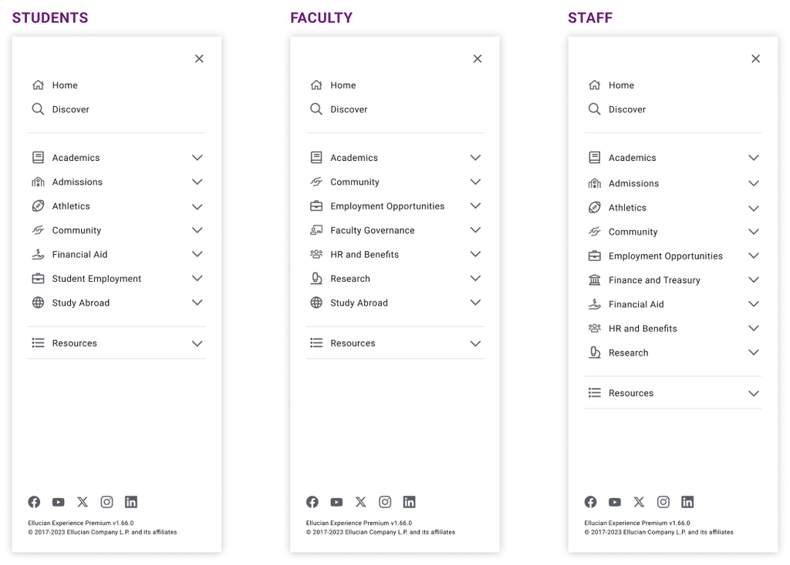
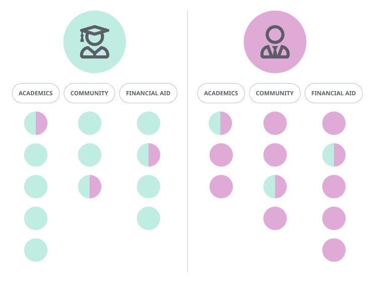
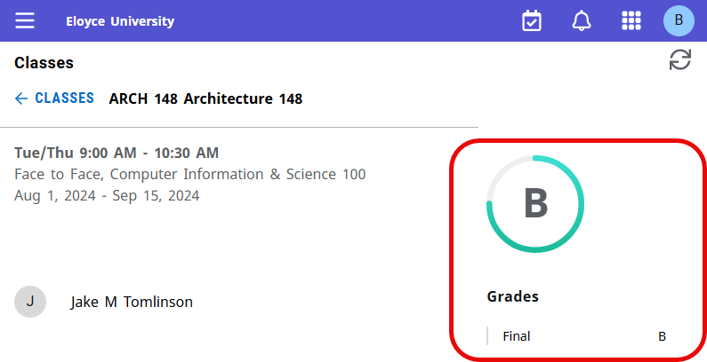

Add content using the Experience interface
Determine the Experience dashboard URL
The Experience dashboard (home page) is your starting point for adding content to Experience and is the entry point to Experience for end users. You can get the dashboard URL from Experience Setup.
About this task
- Experience Test instance: experience-test.elluciancloud.com/<alias>
- Experience Production instance: experience.elluciancloud.com/<alias>
where <alias> is the alias assigned by Ellucian to the associated Ethos environment.
Procedure
-
Click the Copy
 icon next to Ellucian Experience Dashboard URL.
You can provide this URL to Experience users for access to their home page.Note: The Ellucian Experience Dashboard URL field is displayed only after you enter and successfully validate the Ethos Integration API key on this same page.
icon next to Ellucian Experience Dashboard URL.
You can provide this URL to Experience users for access to their home page.Note: The Ellucian Experience Dashboard URL field is displayed only after you enter and successfully validate the Ethos Integration API key on this same page.
Content guidance
Content strategy guidance
The videos provided here will help you to make the most out of Experience by first identifying and prioritizing the information you want to provide to your users and then effectively making that information available through the Experience user interface.
- Access the Experience Content Strategy course in Ellucian on-demand training.
- View the videos embedded below. Click any link in this list to jump to that video:
- Content strategy overview
- Step 1: Define
- Step 2: Assess
- Step 3: Organize
- Step 4: Plan
- Step 5: Validate
- Content strategy summary
To download a transcript covering all of the videos, click  Attachment on this page.
Attachment on this page.
Content strategy overview
Step 1: Define
Step 2: Assess
Step 3: Organize
Step 4: Plan
Step 5: Validate
Content strategy summary
Selecting the appropriate content type
Consider these guidelines when selecting the best type of content to convey information in Experience.
| When creating content, ask yourself... | If Yes, use this content type | Instructions |
|---|---|---|
| Does the information include one or multiple pieces of upcoming information for one or multiple user roles? | Announcement | Create announcements |
| Is the information simple, like a status or data point, that a role or individual would need to see or refer to on a recurring basis? | Card | Set up Experience cards |
| Is the information complex and does it require the user to interact in ways like: reading lengthy details, requesting something, performing complex tasks, or entering data? | Page | Create pages with the Page Designer |
| Do you need to organize events that have a specific date and time; will users need to compare or look ahead at events? | Calendar | Set up the Experience Calendar |
| Do you need to display tasks from different sources that you need an individual to complete by a specific date or time? | Task List | Set up the Experience Task List |
| Do you need to group related cards or information together in a defined location or order? | Category | Set up content categories |
| Is the information something that specific roles or user types are looking for and may need to access frequently? | Category link | Add category and resource links to the Experience main menu |
| Do you need to provide a link to something that many different user types need, but only on occasion? | Resource link | |
| Does the information already exist on a social media platform? | Social media (icon) | Add social media links to the Experience main menu |
Guidance for adding content to cards and pages
These considerations apply to cards created from Ellucian-delivered card templates and pages created with the Page Designer.
Accessibility
When adding content to Experience, consider the guidance in the Web Content Accessibility Guidelines (WCAG) for making your content more accessible to people with disabilities. Ellucian uses WCAG 2.1 in developing Ellucian-delivered Experience content.
App Transport Security requirements (iOS mobile app)
If your institution is using the Experience mobile app, all content linked from Experience must reside on a server that complies with Apple's App Transport Security requirements as described in Experience content requirements to support the iOS app.
While these requirements are technically required only to support the iOS app, Ellucian recommends that you meet these Transport Layer Security (TLS) requirements even if you are not using the Experience mobile app.
Limitation on displaying websites in iframes
Cards created from the Embedded URL template or HTML template, and pages created with the Page Designer using the HTML Editor option, display the content within a sandboxed iframe. Some websites prevent display within an iframe to avoid cross-site scripting (XSS) attacks. If a website has X-Frame-Options set to deny or sameorigin, you will not be able to display it within an iframe (the browser will display an error message).
Content options for iframes
The setup of iframed content includes optional settings, such as allow-scripts, that support the display within the sandboxed iframe. For details, see the procedures for the Embedded URL card, HTML card, and Page Designer.
Embedding videos in template cards
The Embedded URL template is the preferred template option for embedding a video within a card, because the entire video is visible in the card. While a video can be embedded in a card created from the Free-form template or the HTML template, the video might be larger than the card, with scroll bars displayed in the card. See Create an Embedded URL card for additional guidance.
Grant Experience dashboard configuration permissions
Specify the administrative users who can create and configure dashboard content and assign that content to Experience users.
Before you begin
About this task
Users with dashboard configuration permissions can create content and decide who should be able to access that content based on role. You will likely want to grant these permissions to only a few people.
- Users to whom you grant permissions at the system level have access to the specified tabs in Experience Configuration for the system-level dashboard and all institution-level dashboards. To assign system-level permissions, select the system-level tenant when accessing Experience Setup.
- Users to whom you grant permissions at the institution level have access to Experience Configuration only for that institution. To assign institution-level permissions, select the institution-level tenant when accessing Experience Setup.
When you access Experience Setup at the institution level, you can view but not modify the permissions defined at the system level.
For general information about Experience permissions, see Grant Experience application permissions.
Procedure
-
Access Ellucian Experience Setup:
- In the Experience Setup header, click Permissions.
- On the Permissions page, click Experience Platform.
You can assign and view permissions based on either resource or role. See Permissions views: resource and role for a description of the two options. Each view has advantages and limitations. You might use both views within the same session to assign permissions and view the results of your changes.
-
Perform these steps to assign permissions by resource:
-
Perform these steps to assign permissions by role:
Set up content categories
Experience uses content categories to help end users and administrators more easily search and browse available content.
Categories and content
- Academics
- Community
- My Account
- Reporting
- Work
You can change the names of those delivered categories, and you can create additional categories.
After defining the categories, you can associate Experience cards with a category, and create links on the Experience main menu within a category.
The end user's experience
The end user can see a focused view of content available to them in a particular category, accessed from either the Experience tab bar on the dashboard or from the Experience main menu. In both places, each user sees only the categories that include content available to them based on their roles. For example, a student would likely see the Academics category but not the Work category. The categories are displayed in alphabetical order on both the tab bar and main menu.
For details on how cards are displayed on category pages, see End user views of cards.
- If a category contains only cards, it doesn't expand. Clicking the category name goes to the associated category page, where users can search and browse the cards available to them in that category.
- If a category contains only links, it expands to display the links.
- If a category contains both cards and links, it expands to display:
- An Explore link that goes to the category page.
- The links in that category.
- If a category contains neither cards nor links, it is not displayed to the user.
When accessed from the main menu, the My Account category is displayed in a tab on the Profile page. All other categories have their own page.
The administrator's experience
- Edit a card to specify a category for the card.
- Specify the order in which cards appear on each category page when viewed using the Recommended sort option (the default option).
On the Main Menu tab in Experience Configuration, administrators can create and edit categories and add links within a category.
Guidance for using categories
The value of utilizing categories in Experience is about organizing and grouping related information in a logical way for users. When related things appear together, they are faster and easier for users to find, based on their expectations.
- Do - Think about categories as labels that describe the information that can be found within.
- Don’t - Think about categories as different user types or personas.
The cards and links that appear within a category are role-based. Each user sees only categories, and content within a category, that is relevant to them and their role. For example, you might create a category called Study Abroad, and create a link within that category to a web page describing your study abroad program. If that link was assigned the "student" and "faculty" roles, and if that link was the only content within the Study Abroad category, then the Study Abroad category would appear on the Experience main menu for students and faculty, but not for staff, as shown in the sample menus below.

- A student sees content assigned the "student" role and content assigned both the "student" and "staff" roles .
- A staff member sees content assigned the "staff" role and content assigned both the "student" and "staff" roles .

Create a category
Categories are used to organize content on the Experience main menu. Experience is delivered with five categories. Use this procedure to create additional categories.
Before you begin
The user performing this procedure must have been granted the Main Menu administrative permission in Ellucian Experience Setup, as described in Grant Experience dashboard permissions.
Procedure
-
Click the Main Menu
 icon and then click
icon and then click  Configuration to access the Configuration page.
Configuration to access the Configuration page.
-
Click
 EDIT CATEGORIES.
EDIT CATEGORIES.
-
Enter settings for the new category:
Setting Description Category label Enter a descriptive label for this category. Category icon Select the icon that will appear next to the category on the Experience main menu. To see all of the icons at a glance, click Attachment on this page to download the table of Experience icons.Show in main menu Specify whether the category will be visible now to Ellucian Experience users on the main menu. You might hide a category, for example, if you want to create and configure the category now but do not yet want to make it visible to users.
Edit a category
You can change the attributes of a category delivered with Experience or an additional category you created.
Before you begin
The user performing this procedure must have been granted the Main Menu administrative permission in Ellucian Experience Setup, as described in Grant Experience dashboard permissions.
Procedure
-
Click the Main Menu icon and then click Configuration to access the Configuration page.
-
Click EDIT CATEGORIES.
-
In the Edit Categories dialog, make the desired changes:
Setting Description Category label Enter a descriptive label for this category. If you change the label of one of the five default categories, note the following:- You should review the cards within the category to determine whether they still belong in the category. For example, Ellucian-delivered cards are assigned a category based on the default labels. If a card no longer belongs in the renamed category, you can change its category by editing the card.
- The default labels are translated if one of your users selects another language in their Experience profile. If you change the label, it is not translated.
Category icon Select the icon that will appear next to the category on the Experience main menu. To see all of the icons at a glance, click Attachment on this page to download the table of Experience icons.Show in main menu Specify whether the category will be visible now to Ellucian Experience users on the main menu. You might hide a category, for example, if you want to create and configure the category now but do not yet want to make it visible to users.
Note: This setting is available only for categories you created. The five Ellucian-delivered categories do not have this setting, and are always visible to users who have cards or links in that category based on their role.
Specify the card order in a category
Content administrators can specify the default order of the cards within a category.
Before you begin
The user performing this procedure must have been granted the Card Management administrative permission in Ellucian Experience Setup, as described in Grant Experience dashboard permissions.
About this task
Procedure
- Access Ellucian Experience as a user with the Card Management administrative permission.
-
Click the Main Menu icon and then click Configuration to access the Configuration page.
- Click the Card Management tab.
- Click the tab for the category in which you want to specify the card order.
- Locate a card that you want to move up or down in the order.
-
In the Actions column, click the More
 icon and then click the desired Move option (Move up, Move down, Move to top, or Move to bottom).
icon and then click the desired Move option (Move up, Move down, Move to top, or Move to bottom).
Set up Experience cards
Cards are displayed on the Experience user's home page, and provide the primary entry point for delivering content to users.
Cards can embed information, share dynamic and live data, and be customized to display any content. A card can provide a summary of information, with more detailed information provided in an associated Experience page or in an external URL.
An Experience user's dashboard can include both cards delivered with Experience and cards you create:
| Card type | Detailed description |
|---|---|
| Delivered cards for which the type of information and format are pre-defined. | Ellucian-delivered cards |
| Card templates from which your institution can create your own cards. | Create a card from a template |
| Cards that developers at your institution create using the Ellucian Experience Software Development Kit (SDK), available with Experience Premium. | Add a card to an extension |
Each user has access to cards that are enabled by the institution and for which the user has a role assigned to the card.
End user views of cards
Ellucian Experience provides end users with different views of available cards.
Card views: Home page, categories, and All Cards
These views can be accessed from either the tab bar above the cards on the dashboard or from the Experience main menu.
| Card view | Description |
|---|---|
| Home page | The home page displays cards that have been locked by an administrator and cards that the user has saved. For a detailed description, see Card display on the home page below. The home page is displayed when a user first accesses Experience. Users can return to the home page from elsewhere in Experience using several options:
|
| Category pages | Category pages display all cards that are both assigned to that category and assigned to one of the user’s roles. Users cannot move or remove cards on category pages. Users can access the category pages from either:
|
| All Cards page | On the All Cards page, users can see all cards available to them, based on each user's assigned roles and the roles assigned to each card. Cards that are not assigned a category appear on the All Cards page but not on any category pages. Users cannot move or remove cards on the All Cards page. Users can access the All Cards page from either the VIEW ALL CARDS link on the tab bar on the Experience dashboard or from the All Cards link on the Experience main menu. |
Search and sort
- Select from several sort options. On category pages, the default option is Recommended, which is the order specified by administrators using the procedure in Specify the card order in a category.
- Find cards by searching or clicking tags at the top of the page.
The search and sort options are not available when accessing a category page from the tab bar on the dashboard.
Card display on the home page
Both administrators and end users have some control over which cards are displayed, and in what order, on the user's home page.
At the top of the user's home page are cards that an administrator has designated in Card Management as "Lock on home page." The administrator specifies the order in which locked cards appear on the home page. Users cannot remove locked cards or move them on the home page. On locked cards, a lock icon is displayed instead of the Remove icon .
- Cards that a user has saved by clicking the Save icon within that card on the All Cards page or one of the category pages. Users can remove these cards from the home page by clicking the Remove icon within the card.
- Cards that an administrator has designated in Card Management as "Display on home page." These cards initially appear above cards that the user has saved. Users can remove these cards from the home page.
- The Web Links and To-Do List cards, which are delivered by Ellucian and are automatically displayed on the home pages of new users. Users can remove these cards from the home page.
- Cards created by developers at your institution using the Experience SDK, for which the developer has enabled the
setPreventRemoveattribute. Users cannot remove these cards from the home page.
Mini cards
Mini cards are small representations of Experience cards, displayed in small viewports such as the Experience App or the responsive Experience web application viewed in a mobile browser on a mobile device. Mini cards allow users to see multiple cards at a glance on Experience pages (the home page, All Cards page, and category pages) in small viewports. Each mini card displays the card name and an icon representing the card content. Clicking a mini card launches an expanded view of the card.
Content administrators select a mini card icon when configuring each card in the card setup wizard. The available icons are from the Ellucian Path™ Design System.
General procedures for maintaining cards
This section contains general procedures with the steps that are common to setting up and editing all Experience cards. Information specific to a particular card is with the documentation for setting up that card.
Grant permission to manage cards
To create and manage cards, an Experience user must have been granted the Card Management administrative permission in Ellucian Experience Setup.
For the procedure, see Grant Experience dashboard configuration permissions.
Set up an Experience card
To make an Experience card available on user dashboards, you must first configure it in Experience Card Management.
Before you begin
About this task
This is a general procedure with the steps that are common to all Experience cards. Information specific to a particular card, such as settings entered in the Configuration section of the card setup page, is with the documentation for setting up that card.
Procedure
-
Click the Main Menu icon and then click Configuration to access the Configuration page.
-
In the Actions column, click the More icon and then click Edit to access the Edit Card page.
-
In the Details section of the page, enter basic card settings:
-
In the Card Information area, enter descriptive information:
Setting Description Card title This title is displayed at the top of the card. Ellucian recommends a title length of 55 characters or less to ensure readability on all devices. Card description This description is not displayed on the card, but is used in search. Card tags Tags are used in search and to filter the cards displayed on the All Cards page and on category pages when accessed from the Experience main menu. You can enter multiple tags, separated by commas. The title, description, and tags help Ellucian Experience users to find cards of interest to them on the All Cards page and on category pages when accessed from the Experience main menu:- The tags are displayed at the top of the page. Users can click a tag to filter the display to only cards with that tag.
- When a user searches for cards, the search includes the text that you enter for title, description, and tags.
For Ellucian-delivered cards, the default card title and description are translated if one of your users selects another language in their Experience profile. If you change the title or description, it will not be translated.
Setting Description Mini card icon Select the icon that best represents this card's content, to be used on small viewports where cards are displayed as mini cards that can be expanded to view content. To see all of the icons at a glance, click Attachment on this page to download the table of Experience icons. - Optional:
In the External Link area, enter the settings in the table below if you want the card to contain an external link.
- In full-size cards, the external link is accessed from the card action menu
- On small viewports, where clicking a mini card opens an expanded view of the card, the external link is displayed on the card itself.
In the Experience web application (in the browser), links to targets outside of Experience will open in a new tab, while links to Experience pages will open in the same tab. In the Experience mobile app, the link will open in an overlay window.
Setting Description External link label Enter the text for the link as it will appear in the card. External link URL Enter the link target URL. - In full-size cards, the external link is accessed from the card action menu
-
In the Card Information area, enter descriptive information:
Edit a card
Perform these steps to make changes to a card that you have already set up.
Before you begin
Procedure
-
Click the Main Menu icon and then click Configuration to access the Configuration page.
-
If you want to modify other settings, click the More icon in the Actions column and then click Edit.
Set up Ellucian-delivered cards
Ellucian-delivered cards
Ellucian delivers some cards with Ellucian Experience. The table below briefly describes each delivered card and provides a link where you can find detailed information.
- The Card/page column indicates whether the card has associated Experience pages:
- C = card only
- C/P = card and one or more Experience pages
- The Tier column indicates which cards are available with Experience Foundation and which require Experience Premium:
- F = Available with both Experience Foundation and Experience Premium.
- P = Requires Experience Premium
- F/P = Available with Experience Foundation if you have licensed the SaaS version of the Ellucian solution that supports this card. Requires Experience Premium if you have licensed the on-premises version.
| Source of data | Card name | Card/page | Tier | Brief description | Details |
|---|---|---|---|---|---|
| ERP | Classes1 | C/P | P | Displays information from the ERP for classes in which this user is enrolled as a student. If this class has been provisioned to a learning management system (LMS) using ILP 5, the page shows additional information. | Set up the Classes and Class Schedule cards |
| Class Schedule1 | C | P | Displays class meeting dates/times, locations, and start/end dates from the ERP, for courses in which this user is enrolled as a student. | ||
| ERP Advisor1 | C | P | The ERP Advisor card displays advisors assigned to this student in the ERP for the current term and future terms. If the student has more than one advisor assigned, the student can scroll through the list of advisors. Note: The ERP Advisor card displays information stored in the ERP, and does not require CRM Advise.
For a detailed description, see ERP Advisor card. |
Set up an Experience card | |
| Housing Request | C | P | Displays information about a student's application for student housing, and provides links to the housing software solution where the student can create and monitor a housing application. | Set up the Housing Request card | |
| Anonymous Grading | Faculty Grading | C/P | P | Enables faculty to access Banner grade entry pages for both anonymous grading courses, where students are identified by an anonymous ID, and non-anonymous grading courses, where students are identified by name. | For implementations that include both anonymous and non-anonymous grading courses: Configure and enable Faculty Grading card For implementations that include only non-anonymous grading courses: Set up the Faculty Grading card in Experience |
|
Application Processing (requires additional licensing) |
Application Processing | C/P | F | Enables admissions personnel to view application processing status, correct application errors, and manage application templates. | Configure and enable the Application Processing card |
| Banner in Experience (currently in select release) |
Banner Search | C/P | F | Provides the ability to search for a Banner 9x Administrative or Self-Service page, and launch that page within Experience. | Banner Search |
Banner Self-Service cards:
|
C/P | F | Provides access to Banner Self-Service applications. | Banner Self-Service cards | |
| Cards created from templates | C/P | F | You can use Experience card templates to create your own cards that launch specific Banner Administrative and Self-Service pages within Experience. | Build the Banner URL and create a Banner card in Experience | |
| Cal Grant for Colleague (requires additional licensing) (currently in select release) |
CalGrant UI | C/P | F | Enables administrators to view and manage Cal Grant roster imports. | Configure and Enable the California Grants Card |
| Communicate | Audience List | C/P | F | Enables staff to create audience lists that can be used to send communications to a targeted population. | Configure and enable Audience List card |
| CRM Advise (requires additional licensing) |
Advise Communications | C | F/P | Displays text messages, mobile notifications, and emails sent from CRM Advise to this student. | Display CRM Advise content in Ellucian Experience |
| Alert Submission | C | F/P | Allows faculty to create alerts for the students under the specific sections. | ||
| My Advisees | C/P | F/P | Shows all the alerts created for the specific advisees, and shows the risk level of the specific student. | ||
| Request Assistance | C | F/P | Allows students to self-identify issues or concerns, ensuring appropriate Success Team follow-up through Alerts or Cases within CRM Advise. | ||
| Staff Reporting | C | F/P | Allows staff to create an alert in CRM Advise for any student on campus without requiring a CRM license. | ||
| Success Team | C | F/P | Displays advisors assigned to the Student Success Team in CRM Advise for this student. For each advisor, the card displays contact information, office hours, and upcoming appointments with this student. | ||
| Upcoming Events | C | F/P | Displays upcoming events that are managed in the CRM Advise console. Users can click each event to view details for that event, or register for the event if the event requires registration. | ||
| Appointment scheduling for administrators | C/P | F/P | Allows administrators to perform administrator functions to manage appointment data and processes. | Set up the Appointment Scheduling cards in Experience | |
| Appointment scheduling for staff members | C/P | F/P | Allows staff/advisors to book appointments and view appointment history. | ||
| Appointment scheduling for students | C/P | F/P | Allows students to book appointments and view appointment history. | ||
| CRM Advance - Engage (requires additional licensing) |
Activity List | C/P | F | Enables development officers to create contact reports and view a list of in-progress and finished contact reports associated with their profile. | Set up Experience Cards for Engage |
| Constituents | C/P | F | Enables development officers to view read-only information about their constituents pulled directly from CRM Advance, including employment/education/contact information and contribution details. | ||
| Prospects | C/P | F | Enables development officers to view prospect records and prospect data, including each prospect's type, stage, and status information. | ||
| Trip Planning | C | F | Enables gift officers or development officers to plan the most efficient route to meet with constituents, using Google My Maps. | Plan a trip with Google My Maps | |
| Cross Registration (requires additional licensing) |
Registration | C/P | F | Enables students to register for courses in their institution and to cross register for courses delivered by other institutions. | Configure and enable cards |
| Registration Errors | C/P | F | Enables administrators to review and troubleshoot registration errors for both home and visiting students. | ||
| Course Catalog | C/P | F | Enables students to access a list of courses and course sections. | ||
| Configure Course Catalog | C/P | F | Enables administrators to add and remove courses from the course catalog. | ||
| Cross Registration Configuration | C/P | F | Enables administrators to access different configuration options for the Cross Registration solution in Experience. | ||
| Section Sharing | C/P | F | Enables administrators to share sections with other institutions and to accept sections from these institutions. | ||
| Data Connect | Data Connect Designer | C/P | P | Provides developers with access to the Data Connect Designer, which they can use to create integration packages. | Set up the Data Connect Designer card in Experience |
| Data Connect Packages | C/P | F | Provides access to manage Data Connect integration packages. | Set up the Data Connect Packages card in Experience | |
| Degree Works (requires additional licensing) |
Academic Plans | C | F | Displays active educational plans defined in Degree Works for this student, along with the overall status (On-Track or Off-Track). The student can expand each plan to view the status for each term. | Ellucian Experience integration |
| Degree Progress | C | F | Displays requirements progress and credits progress for all active degrees defined in Degree Works for this student. | ||
| Ellucian Apprenticeships (requires additional licensing) |
Apprenticeships | C/P | F | Enables employers to partner with learners and institutions in a three-way relationship model to develop apprenticeship programs. | Configure and enable Apprenticeships cards |
| Ellucian Payment Service (currently in select release) |
Ellucian Payment Service Card | C/P | F | Enables administrators to add and maintain information about payment providers. | Set up the Ellucian Payment Service cards in Experience |
| EPS Payment Initiator Card | C/P | F | Enables Experience users to make payments with a supported payment provider through Banner Self-Service. | ||
| Ellucian Regulatory Management (requires additional licensing) (currently in select release) |
ConfigurationCard | C/P | F | Enables returns officers to customize the columns shown for different data families such as courses, locations, or students. | Configure and enable Ellucian Regulatory Management cards |
| AsyncReports-ERM | C/P | F | Enables returns officers to view and download Async job reports. | ||
| Ellucian Workflow (requires additional licensing) |
Ellucian Workflow Inbox | C | F | Displays outstanding tasks assigned to this user in Ellucian Workflow. | Display Workflow content in Ellucian Experience |
| Ethos Integration | EI Applications | C/P | F | Enables Ethos administrators to view information about Ethos applications. | Set up the Ethos Integration cards in Experience |
| EI Audit Logs | C/P | F | Enables Ethos administrators to browse audit logs for system and security monitoring. | ||
| EI Errors | C/P | F | Enables Ethos administrators to browse errors generated in Ethos components. | ||
| Ethos User Provisioning (currently in select release) |
Provisioning Metrics | C/P | F | Enables administrators to monitor and manage provisioning activities in Ethos User Provisioning. | Configure and enable the Provisioning Metrics card |
| Gmail | C | P | Displays the 10 most recent inbox emails from a user’s Gmail account. Clicking on any email launches Gmail. | Configure the Google Productivity Cards | |
| Google Drive | C | P | Displays the 10 most recently modified documents from a user’s Google Drive account. Clicking on any file name launches the Google Drive web application. | ||
|
Human Capital Management |
HCM Leave Card | C | F | Enables users to view their leave balances and leave requests. | Set up the Human Capital Management Cards |
| HCM Pay Stubs Card | C | F | Enables users to view a high-level detail of pay stubs including gross pay, net pay, taxes, and deductions for recent pay periods. | ||
| HCM Time Card | C | F | Enables users to track hours worked by clocking in and out of a shift. | ||
| HCM HR Configuration Card | C/P | F | Allows Colleague administrative users to set up configurations for the Leave card. | ||
| Org Chart (currently in beta release) |
C/P | F | Allows employees to view the org chart. | Set up the Organization Chart Cards | |
| Org Chart Configuration (currently in beta release) |
C/P | F | Allows administrative users to set up parameters for the org chart. | ||
| Insights (requires additional licensing) |
Insights Administration | C/P | F | Provides access to tools for ingesting and loading data into the Insights Data Warehouse for reporting. | Set up the Insights Administration card in Experience |
| Insights Reporting | C/P | F | Enables report designers and viewers to access the Insights reporting tool. | Set up the Insights card in Experience | |
| Journey (currently in beta release) |
My Journey Admin Tool | C/P | F | Enables administrators to create and maintain the continuing education courses and sections for an institution, and map courses to skills using Journey's AI functionality. | Configure and enable Journey cards |
| Journey | C/P | F | Enables learners to explore continuing education courses based on AI-generated recommendations, and then monitor skill and career path development through a gamified user experience. | ||
| Microsoft | Outlook | C | P | Displays the 10 most recent inbox emails from a user’s Outlook account. Clicking on any email launches Outlook. | Configure the Microsoft Productivity Cards |
| OneDrive | C | P | Displays the 10 most recently modified documents from a user’s OneDrive account. Clicking on any file name launches the Microsoft OneDrive web application. | ||
| Multiple Measures Placement (requires additional licensing) |
Multiple Measures | C/P | F | Enables administrators to configure rules and placement messages, collect and view student application data, and view placement results. | Set up the Multiple Measures Placement Cards |
| Placement Services | C/P | F | Enables students to provide application data and view suggested course placements. | ||
| Person Manager | Global Person Search | C/P | F | Enables administrators to search for people in the ERP (Banner, Colleague) that you have integrated with Person Manager. | Configure and enable Person Manager cards |
| Person Manager | C/P | F | Enables administrators to resolve potential matches and matching errors. | ||
| Universal Person Records | C/P | F | Enables administrators to search for, view, and delete person records in the Person Store. | ||
| Structured Progression | Assigned Committees | C/P | F | Allows staff to view the committees to which a committee member is assigned, and to review the progression status of students, add comments regarding their academic progress and confirm their end of interim year progression and final year award outcomes. | Configure and enable Structured Progression cards |
| Student Progression History | C/P | F | Allows staff to search for a student and view that student's current and historical progression outcomes. | ||
| User-generated content | To-Do List card | C | F | Users can add to-do items, and optionally set a reminder that will appear in the Experience Notifications Center. By default, this card appears automatically on the home page for new users if they have a role assigned to the card. Content administrators can change this behavior using the Specify card's placement setting for this card in card setup. |
Set up an Experience card |
| Web Links card | C | F | Users can add links to web sites. By default, this card appears automatically on the home page for new users if they have a role assigned to the card. Content administrators can change this behavior using the Specify card's placement setting for this card in card setup. |
Classes and Class Schedule cards
Prerequisites for the Classes and Class Schedule cards
This topic describes setup in other Ellucian solutions that supports the Classes and Class Schedule cards.
Classes card with ILP
- Blackboard integration with other Ellucian solutions
- Brightspace integration with other Ellucian solutions
- Canvas integration with other Ellucian solutions
- Moodle integration with other Ellucian solutions
(Banner) Class Schedule card with online classes
If your institution has online, self-paced classes that have no start and end times set, ensure that you have set the time zone fields in Banner. Use the UTC Offset and Time Zone fields on the Banner Installation Controls (GUAINST) page to configure the time zone based on the location of your institution. For institutions with multiple campuses located in different time zones, use the Campus Code Validation page (STVCAMP) to configure the time zone for each campus.
If time zones are not set in Banner, students enrolled in multiple online, self-paced classes might see those classes appear at incorrect days and times in the Class Schedule card. Setting the time zone fields will cause those classes to appear on the Class Schedule card at midnight on the correct day.
Set up the Classes and Class Schedule cards
The Classes and Class Schedule cards display information about classes in which the Experience user is enrolled as a student. Both cards are available with Experience Premium.
Before you begin
About this task
The Classes card and page display information from the ERP, and optionally from a learning management system (LMS) using ILP. For a detailed description, see About the Classes card and page.
The Class Schedule card displays class meeting dates/times and locations from the ERP.
Because the Classes and Class Schedule cards are built on the same Experience extension, all of the configuration settings listed below appear in card setup for both cards. However, the Class Schedule card uses only the "Enable improved performance" setting. The other settings are used only by the Classes card. Also, because settings are applied at the extension level, the "Enable improved performance" setting will be applied to both cards if you enable it in card setup for either card.
Procedure
-
In the Configuration section of the card setup page, enter the settings described below.
Most of the settings apply only if you are using the Classes card with ILP:
- If you are setting up the Classes card but are not using ILP, only the Grade type code for Grade Indicator and Enable improved performance settings are used by Experience.
- If you are setting up the Class Schedule card, only the Enable improved performance setting is used by Experience.
Setting Entry Learning Management System name Enter the name of the LMS as you want it to appear in the LMS link in the term view of the Classes page. Learning Management System URL Enter the URL for that link. You might want the link to go to your institution's home page in the LMS. Grade type code for Grade Indicator Enter the code for the type of grade that is displayed on the Classes card and page. These can include midterm grades, unverified final grades, or verified (rolled) final grades. See Grades displayed on the Classes card and page for the valid entries and resulting display of grades. Enable improved performance (requires Banner API 9.34.1+ or Colleague Web API 2.7+) Enable this toggle switch to support improved performance and other features in the Classes and Class Schedule cards. If you are configuring the Classes or Class Schedule cards for the first time, this setting is enabled by default. Note: If this setting is enabled, you must set up the Banner or Colleague APIs as described in API setup to support enhanced features in the Classes and Class Schedule cards. Otherwise, the Classes and Class Schedule cards will not properly display the user's classes.Ellucian ILP API URL Enter the URL of the ILP APIs. Enter the ILP web services URL for the ILP environment (Production or Test) that you are configuring:- Production ILP environment:
https://webservices.ilp.elluciancloud.com:443
- Test ILP environment:
https://webservices-preview.ilp.elluciancloud.com:443
If you are in a region other than the U.S., substitute the domain for your region in place of ilp.elluciancloud.com. See ILP domains and IP addresses .
Ellucian ILP API username and Ellucian ILP API password Enter the service connection identifier and password for ILP. You can copy the service connection identifier from the Service Connections page in Ellucian ILP Administration. You can either use the same service connection for all applications, or create a service connection exclusively for Ellucian Experience using the procedure in Define credentials for a connection to the ILP services. ILP via Ethos Integration If your institution does not use the Cross Registration solution, accept the defaults: - Leave the ILP via Ethos Integration toggle in the disabled position. In this mode, the Classes card uses a direct connection to ILP.
- Leave the Ellucian Experience Application Key field blank.
If your institution uses Cross Registration:- Enable the ILP via Ethos Integration toggle. In this mode, the Classes card uses Ethos Integration to connect to ILP, which is required to support Cross Registration.
- In the Ellucian Experience Application Key field, enter the API key of the Ethos application that you created for Ellucian Experience:
- Open Ethos Integration in a separate browser tab.
- On the Ethos Integration header bar, click Applications.
- On the Applications page, click the name of the Ethos application that you created for Ellucian Experience.
- On the Application Overview page, click the API Keys tab (the default).
- On the API Keys page, click the Copy icon to copy the API key.
- On the Classes card setup page, paste that API key into the Ellucian Experience Application Key field.
See Cross Registration in the Classes card and page for the information displayed for both the home institution and other host institutions.
For other configuration required to support the Classes card with Cross Registration, see Configuration of the Classes Card for Registration.
Ellucian Experience Application Key
Grades displayed on the Classes card and page
The Classes card and page can display grades from the ERP.
A summary grade is displayed within a circular gauge chart on all three views: the card, the term view of the page, and the class detail view of the page. The class detail view also includes a Grades table. The image below shows an example of the class detail view of the page with both the summary grade and Grades table. The displayed grades are based on your entry in the Grade type code for Grade Indicator setting in Classes card configuration.

Banner
For Banner, the valid entries and resulting grade display are shown in the table below. The TRANSCRIPT option is supported only if you have enabled the Enable improved performance setting in Classes card configuration.
| Entry in the Grade type code for Grade Indicator field | Summary grade in the circular gauge chart | Grades table |
|---|---|---|
| <blank> | none | none |
| TRANSCRIPT (Supported only if you have enabled the Enable improved performance setting in Classes card configuration.) |
Verified (rolled) grade. If the student does not have a verified grade, the summary grade is not displayed. |
Verified (rolled) grade, labeled as Final grade. If the student does not have a verified grade, the grades table is not displayed. |
| FINAL | Verified (rolled) grade if it exists. Final (unverified) grade if the verified grade does not exist. If neither exist, the summary grade is not displayed. |
Both the final and midterm grades. The final grade is:
If neither a final nor midterm grade exists, the grades table is not displayed. |
| MID1 | Midterm grade If the student does not have a midterm grade, the summary grade is not displayed. |
Midterm grade If the student does not have a midterm grade, the grades table is not displayed. |
Colleague
For Colleague, the valid entries and resulting grade display are shown in the table below. The TRANSCRIPT option is supported only if you have enabled the Enable improved performance setting in Classes card configuration and installed Colleague Web API 2.8 or later.
| Entry in the "Grade type code for Grade Indicator" field | Summary grade in the circular gauge chart | Grades table |
|---|---|---|
| <blank> | none | none |
| TRANSCRIPT (Supported only if you have enabled the Enable improved performance setting in Classes card configuration and installed Colleague Web API 2.8 or later.) |
Verified grade. If the student does not have a verified grade, the summary grade is not displayed. |
Verified grade, labeled as Final grade. If the student does not have a verified grade, the grades table is not displayed. |
| FINAL | Final (unverified) grade. If the student does not have a final grade, the summary grade is not displayed. |
Both the final and midterm grades. If neither a final grade nor any midterm grade exists, the grades table is not displayed. |
| Any midterm grade (MID1, MID2, MID3, MID4, MID5, or MID6) | Midterm grade If the student does not have a midterm grade, the summary grade is not displayed. |
Midterm grade If the student does not have a midterm grade, the grades table is not displayed. |
API setup to support enhanced features in the Classes and Class Schedule cards
The Enable improved performance configuration setting for the Classes and Class Schedule cards supports performance improvements and other features.
Banner
- Improved response time.
- Option to display only verified grades as final grades.
- Display of instructional delivery method in the cards.
section-registration-information and section-schedule-information APIs, which requires:- Install the required version of Banner Ethos API:
- Banner Ethos API 9.34.1 or later to support the performance improvements and display of verified grades.
- Banner Ethos API 9.37 or later to display the instructional delivery method.
- In Ethos Integration, ensure that the Ethos application for the Banner Student API owns the
section-registration-informationandsection-schedule-informationresources. - Ensure that the Banner user account for proxy API requests (the user account whose credentials are entered in the Ethos application for Experience) has Read permissions on:
section-registration-information(API_SECTION_REG_INFORMATION security object)section-schedule-information(API_SECTION_SCH_INFORMATION security object)
For the procedure, see Assign privileges to the Banner user.
Colleague
- Improved response time.
- Option to display only verified grades as final grades.
- Display of instructional method in the cards.
section-registration-information and section-schedule-information APIs, which requires:- Install the required version of Colleague Web API:
- Colleague Web API 2.7 or later to support the performance improvements and to display the instructional method.
- Colleague Web API 2.8 or later to display only verified grades as final grades.
- In Ethos Integration, ensure that the Ethos application for Colleague owns the
section-registration-informationandsection-schedule-informationresources.
About the Classes card and page
The Classes card and page displays information from the ERP for classes in which this user is enrolled as a student. If this class has been provisioned to a learning management system (LMS) using ILP 5, the page shows additional information.
- A class detail view for each class. Users can click the class title in the card to access this view.
- A term view of the page showing all classes in the term. Users can click anywhere else in the card to access this view.
Classes card
The Classes card initially displays a list of classes in the current or most recent term. The student can select other terms to see those classes. For each class in the list, the card displays the host institution if the course is provided by another institution, the title of the course, followed by the class meeting dates/times, locations, start/end dates from the ERP, and a summary grade for the class, if available.
Classes page - term view
- Includes a list of terms at the top of the page. When users open the term view, it displays the classes in the term they had selected in the card. Users can view classes in other terms by selecting a term from this list.
- Displays a link to an LMS, if you have specified that link name and URL when setting up the Classes card in Ellucian Experience configuration.
- Displays, for each class, the same information as the card, plus the number of credits and the names of instructors.
- If there is an ILP course site, this view also includes an Assignments pane that displays this student's outstanding assignments from the LMS, sorted by due date. Users can expand each assignment to see more information or follow a link to access the assignment in the LMS.
Classes page - class detail view
- Displays, for the selected class, similar information as the term view, plus an email link for each instructor. This view also displays both a summary grade within a circular gauge chart and a table of grades.
- If there is an ILP course site, this view also displays announcements and assignments from the LMS for this course and provides a link to the course page in the LMS.
Caching of data in the Classes card and page
- Registration activity that is expected to change frequently, especially during registration, is stored in the browser cache. This includes, for example, student registrations or registration changes for a class. The Experience end user can refresh that data using the Refresh button
 on the Classes card or page.
on the Classes card or page. - Data that is not expected to change frequently is stored in a server-side cache. This includes, for example, course title and number, meeting dates and times, building and room assignments, and faculty assignments. The card and page are updated from the server-side cache every ten hours. The Refresh button on the card and page does not update this data.
For more details about caching in the Classes card, see Article KB000511333 in the Ellucian Customer Center.
Course number
- For Banner, if the Common Course Number is entered in the Course Alias field on the SCACRSE form, it is displayed in the Classes card and page. Otherwise, the entry in the Course Number field is displayed.
- For Colleague, the entry in the Course Number field on the CRSE form is displayed in the Classes card and page. If you enter the Common Course Number in that field, it will be displayed on the Classes card and page.
Display of grades
The Classes card and page can display grades from the ERP, as described in Grades displayed on the Classes card and page.
Cross Registration in the Classes card and page
If you have selected the ILP through Ethos mode to support Cross Registration, the Classes card and page can include information about classes delivered by other host institutions, together with information about classes delivered by your home institution.
- The course title as defined in your institution, the title of what Cross Registration refers to as the equivalent course. This title will also link to class detail view.
- The name of the host institution, below the title of the equivalent course.
- The name of the course as defined in the host institution, in bold, below the name of this institution. This title might match, or not match, the course title defined in your home institution, depending on the credit type that institutions have agreed to use for Cross Registration.
- The same information described above for the class—dates, times, locations, and a summary grade.
The operating mode does not affect the information that the card displays for classes delivered by your home institution, which is the same in both modes. For these classes, the card will only display a single course title, the title defined in your institution. It will not include the name of your institution.
The term view of the Classes page can include classes delivered by host institutions and classes delivered by your home institution. The system will display the same information in this view for classes delivered by host institutions as it does in the Classes card, including the equivalent course, the name of the host institution, and the name of the course defined in this institution.
Note that other host institutions may use a different LMS than your home institution. In this case, you will typically configure the Classes card so that the link to the LMS in the term view opens the LMS for your institution. However, the links that open the assignments in the LMS, in the Assignments pane, will open the LMS for your institution or another host institution, depending on which institution delivers the corresponding course.
- The name of the equivalent course, as defined in your home institution.
- The name of the host institution.
- The course title as defined in the host institution.
The remainder of the class detail view contains the same information for all classes, as described above. For classes delivered by host institutions, the link to the course page in the LMS, and the links for any assignments, will open the corresponding pages in the LMS of the host institution.
Productivity Cards
Google Productivity Cards
The Google Productivity Cards provide users with access to their institutional Gmail and Google Drive. Both cards are available with Experience Premium.
- The Gmail card displays the 10 most recent inbox emails (both read and unread) from a user’s Gmail account. For each email, the card displays the sender's name, subject, first line of the message, date received, and document icon (if an attachment exists). The Experience user can click on any email in the card to launch Gmail and open that email.
- The Google Drive card displays the 10 most recently modified documents from a user’s Google Drive account. For each document, the card displays the document title, modified date, name of the user who last modified the document, and an icon representing the document type. The user can click on any file name in the card to launch the Google Drive web application and open the selected file.
For answers to basic questions about the Productivity Cards, see Article KB000510838 in the Ellucian Customer Center.
To use the Google Productivity Cards, you must have a Google Workspace account.
User sign-in
- Signing in on either card provides sign-in for both cards.
- After signing in through the Experience web application, users are automatically signed in to the cards on the Experience mobile app, and vice-versa. Likewise, signing out through either the web application or the mobile app also signs out on the other application after the access token expiration time, which can take up to 60 minutes.
- The cards remain signed in for the next six months or until the user clicks the SIGN OUT button on either card. Sign-in remains active even if the user signs out and back in to Experience.
Transition from the GitHub version of the cards
The Productivity Cards were previously available within Experience extensions that Ellucian customers could download from GitHub and implement using the Experience SDK. If you implemented those versions of the cards, they will continue to work. However, Ellucian recommends that you transition to the new delivered versions to take advantage of the sign-in features described above and to ensure that you benefit from any future enhancements to the delivered cards.
- During card setup, you might have two versions of each card in the Card Management table. Make sure you are editing the Ellucian-delivered version of the card, as indicated by a publisher of Ellucian in the extension information.
- Disable the GitHub versions of the cards, by disabling the cards or removing all roles in Card Management, before enabling the new delivered versions.
- After implementing the delivered cards, disable the extension of the GitHub versions in the Extension Management area of Experience Setup so that only the delivered versions appear in the Card Management table.
Configuration
Setup of the Productivity Cards cards includes both setup in Google and configuration of the cards in Experience Card Management.
The Google procedures include steps performed in the Google Cloud console. The Google user interface might change without Ellucian's knowledge. If the Google user interface does not match the steps in this documentation, consult Google documentation for the comparable procedures.
Create and configure a Google project
The Google project supports display of Gmail and Google Drive data in the Experience cards.
Procedure
-
Enable the required APIs:
-
On the navigation menu , click APIs & Services.
-
On the navigation menu
-
Configure the OAuth consent screen that is displayed to users when they sign in:
-
On the navigation menu , click APIs & Services.
-
On the navigation menu
Next, create OAuth client IDs for the Experience web application and the mobile app.
-
Create the OAuth client ID for the Experience web application:
-
On the navigation menu , click APIs & Services.
-
On the Credentials page, click
 .
.
-
In the Authorized redirect URIs section of the page, click Add URI.
-
Click Add URI again.
-
On the navigation menu
If you are using the Experience mobile app (the Experience App), continue with the steps below to create OAuth client IDs for iOS and Android. If you are not using the Experience App, you are done with this procedure.
-
Create the OAuth client ID for iOS:
-
On the Credentials page, click .
-
On the Credentials page, click
-
Create the OAuth client ID for Android:
-
On the Credentials page, click .
-
On the Credentials page, click
Configure the Google Productivity Cards
In Experience Card Management, configure the Gmail and Google Drive cards.
Procedure
Set up the Gmail or Google Drive card using the general card setup procedure in Set up an Experience card, with the considerations described below.
-
In a separate browser tab, access the credentials page in the Google Cloud console:
-
On the navigation menu , click APIs & Services.
-
On the APIs & Services page, in the left pane, click Credentials.
On the Credentials page, in the OAuth 2.0 Client IDs table, you can use the Copy button to copy the values for each of the three client IDs that you created in Create and configure a Google project. You will copy those client IDs into Experience card configuration in Step 4.
-
On the navigation menu
Microsoft Productivity Cards
The Microsoft Productivity Cards provide users with access to their institutional Outlook and OneDrive. Both cards are available with Experience Premium.
- The Outlook card displays the 10 most recent inbox emails (both read and unread) from a user’s Outlook account. For each email, the card displays the sender’s profile image, name, subject, first line of the message, date received, and document icon (if an attachment exists). The Experience user can click on any email in the Experience card to launch Outlook and open that email.
- The OneDrive card displays the 10 most recently modified documents from a user’s OneDrive account. For each document, the card displays the document title, modified date, name of the user who last modified the document, and an icon representing the document type. The user can click on any file name in the card to launch the Microsoft OneDrive web application and open the selected file.
For answers to basic questions about the Productivity Cards, see Article KB000510838 in the Ellucian Customer Center.
To use the Microsoft Productivity Cards, you must have a Microsoft Azure/Office 365 account.
User sign-in
- Signing in on either card provides sign-in for both cards.
- After signing in through the Experience web application, users are automatically signed in to the cards on the Experience mobile app, and vice-versa. Likewise, signing out through either the web application or the mobile app also signs out on the other application after the access token expiration time, which can take up to 60 minutes.
- The cards remain signed in for the next six months or until the user clicks the SIGN OUT button on either card. Sign-in remains active even if the user signs out and back in to Experience.
Transition from the GitHub version of the cards
The Productivity Cards were previously available within Experience extensions that Ellucian customers could download from GitHub and implement using the Experience SDK. If you implemented those versions of the cards, they will continue to work. However, Ellucian recommends that you transition to the new delivered versions to take advantage of the sign-in features described above and to ensure that you benefit from any future enhancements to the delivered cards.
- During card setup, you might have two versions of each card in the Card Management table. Make sure you are editing the Ellucian-delivered version of the card, as indicated by a publisher of Ellucian in the extension information.
- Disable the GitHub versions of the cards, by disabling the cards or removing all roles in Card Management, before enabling the new delivered versions.
- After implementing the delivered cards, disable the extension of the GitHub versions in the Extension Management area of Experience Setup so that only the delivered versions appear in the Card Management table.
Configuration
Setup of the Microsoft Productivity Cards includes both setup in Microsoft and configuration of the cards in Experience Card Management.
The Microsoft procedures include steps performed in Microsoft Azure. The Azure user interface might change without Ellucian's knowledge. If the Azure user interface does not match the steps in this documentation, consult Microsoft documentation for the comparable procedures.
Register and configure an app in Microsoft Azure
The Azure app supports display of Outlook and OneDrive data in the Experience cards.
Procedure
-
On the App registrations page, in the header, click New registration.
If you previously implemented the GitHub version of the Microsoft Productivity Cards, create a new application for the Ellucian-delivered cards rather than re-using the existing application.
-
In your new Azure app, set up a redirect URI for the Experience web application:
-
On the Authentication page, in the Platform configurations section, click Add a platform.
-
On the Authentication page, in the Platform configurations section, click
-
If you are using the Experience mobile app (the Experience App), set up a redirect URI for the Experience App:
-
On the Authentication page, in the Platform configurations section, click Add a platform again.
-
On the Authentication page, in the Platform configurations section, click
-
Create a client secret for the Azure app:
-
On the Certificates & secrets page, on the Client secrets tab, click New client secret.
-
On the Certificates & secrets page, on the Client secrets tab, click
-
Add API permissions to the Azure app:
-
On the API permissions page, in the Configured permissions section, click Add a permission.
-
On the API permissions page, in the Configured permissions section, click
Configure the Microsoft Productivity Cards
In Experience Card Management, configure the Outlook and OneDrive cards.
Procedure
Set up the Outlook or OneDrive card using the general card setup procedure in Set up an Experience card, with the considerations described below.
Faculty Grading card (Banner)
Faculty members can use the Faculty Grading card to access grade entry pages in Banner. The Faculty Grading card is available with Experience Premium.
The Faculty Grading card provides a list of a faculty member's current courses, with a link to the grading page for each course. The card supports two types of courses:
| Course type | Description |
|---|---|
| Anonymous grading | These are courses for which the grade entry page identifies students by an anonymous ID rather than the student's name. Anonymous grading is required, for example, for some law schools in the U.S. Clicking the course link in the card opens a grade entry page for that course in Experience. |
| Non-anonymous grading | These are courses for which the grade entry page identifies students by name. This is the typical grading for most courses, and many institutions will have only non-anonymous grading courses. In the Faculty Grading card, non-anonymous grading courses are identified by an external link icon |

Because the Faculty Grading card supports non-anonymous grading courses, it is useful even for institutions that don't require the anonymous grading features but want to have a grading card for their faculty.
Documentation
- If your implementation includes both anonymous and non-anonymous grading courses, use the procedures in Ellucian Anonymous Grading.
- If your implementation includes only non-anonymous grading courses, use the procedures in this section.
Set up roles and users for Faculty Grading
Set up the roles and users who need access to Faculty Grading configuration or need to have the Faculty Grading card on their dashboards.
About this task
- Configure Faculty Grading.
- View, but not change, Faculty Grading configuration.
- Access the Faculty Grading card on the dashboard.
For example, you might define the following roles:
| Role | Desired access (example) |
|---|---|
| Faculty Grading administrator | Configure Faculty Grading. Access the Faculty Grading card. |
| Other administrators | View, but not change, Faculty Grading configuration. |
| Faculty | Access the Faculty Grading card. |
The ability to change or view Faculty Grading configuration can be granted to either a role or an individual user. Card access is granted only to roles, not to individual users.
Procedure
What to do next
- Grant configuration access to roles or users, using the procedure in Grant administrator permissions for Faculty Grading.
- Grant card access to roles, using the procedure in Set up the Faculty Grading card in Experience.
Grant administrator permissions for Faculty Grading
Grant the permissions that allow administrators to manage or view Faculty Grading configuration.
Before you begin
About this task
For general information about Experience permissions, and the detailed procedure for granting permissions, see Grant Experience application permissions.
Procedure
Configure Faculty Grading settings
Specify the configuration settings for the Faculty Grading card.
Before you begin
If this is a Banner SaaS implementation, set up the Banner Search card for Faculty Self-Service as described in Set up the Banner Search card. This is required to support links from the Faculty Grading card to grade entry pages for non-anonymous grading courses.
The user performing this procedure must have been granted the Manage Configurations permission in Ellucian Experience Setup, as described in Grant administrator permissions for Faculty Grading.
About this task
Procedure
-
On the Experience Application menu
 , click Anonymous Grading.
, click Anonymous Grading.
Set up the Faculty Grading card in Experience
The Faculty Grading card provides a list of a faculty member's current courses, with a link to a grading page for each course.
About this task
Procedure
ERP Advisor card
The ERP Advisor card displays advisors assigned to this student in the ERP for the current term and future terms. If the student has more than one advisor assigned, the student can scroll through the list of advisors. The ERP Advisor card is available with Experience Premium.
Ethos properties
emails, phones, and addresses properties in the Persons data model in Ellucian Ethos. Each of those properties includes a type - for example, Ethos address types include business and home, among others. The Advisor card displays the advisor's data of the Ethos business type for all of these properties, according to the following logic (using address as the example):- If there is one address of the
businesstype, it is displayed in the card. - If there are multiple addresses of the
businesstype, and one is marked preferred/primary, that address is displayed. If none are marked preferred/primary, the first address is displayed. - If there are no addresses of the
businesstype, no address is displayed in the card.
Your institution will have mapped Ethos types to ERP types for email, phone, and address, so the type in the ERP might be something other than business.
Set up the Housing Request card
The Housing Request card displays information about a student's application for student housing, and provides links to the housing software solution where the student can create and monitor a housing application. The Housing Request card is available with Experience Premium.
Before you begin
Set up loading of data from your ERP (Banner or Colleague) into Ellucian Ethos Data Access, and add the required GraphQL resources to the Ethos application for Ellucian Experience. See Set up GraphQL requests to Data Access.
About this task
The Housing Request card uses housing information stored in Banner or Colleague, and sent from there to Ellucian Experience using Ethos Integration and Data Access. Typically, you would integrate an external solution, such as Adirondack Solutions or eRezLife, with Banner or Colleague. Students would use the external solution to create and maintain their housing applications, and that data would be stored in Banner or Colleague. For the current list of supported housing software solutions, see the Ellucian Partner Catalog.
Based on the status of the housing request or housing assignment, the Housing Request card displays appropriate information and provides links where the student can get more details or take action. The table below shows the text displayed on the card for each status. In the procedure below, you will specify the URLs for each of the links (such as the Apply now link for new applications) and the deadline date displayed for new or in-progress applications.
| Ethos data model | Status | Text displayed on the card |
|---|---|---|
| housing-requests | [none] | NOT STARTED Get housing for the upcoming year! Apply for on-campus housing by [date]. Apply now |
| housing-requests | submitted | IN PROGRESS Get housing for the upcoming year! Apply for on-campus housing by [date]. Go to application |
| housing-assignments | assigned | COMPLETED Your housing assignment is available! |
| housing-requests | rejected | REJECTED Your housing request was denied. To understand why the housing request was rejected, review your housing application status. |
| housing-requests | withdrawn | WITHDRAWN Your housing request was withdrawn. We received your housing cancellation request. See the housing application for any follow-on actions. |
Procedure
Create a card from a template
Card templates provide a framework from which you can create your own cards.
Before you begin
About this task
This is a general procedure with the steps that are common to all card templates. Information specific to a particular template, such as settings entered in the Configuration section on the card setup page, is with the documentation for that template.
Ellucian Experience provides the card templates listed below. The Tier column indicates which templates are available with Experience Foundation (F) and which require Experience Premium (P).
| Template | Tier | Description | Procedure |
|---|---|---|---|
| Big Number | P | Create a card that displays a single number, with an optional external link that provides more information. | Create a Big Number card |
| Embedded URL | F | Create a card that displays a website within an iframe. | Create an Embedded URL card |
| Free-form | F | Create a card with formatted text, links, and images. | Create a Free-form card |
| HTML | F | Create a card that displays content based on HTML that you provide. | Create an HTML card |
| Image | F | Create a card that displays an image, which can optionally be a clickable link. | Create an Image card |
| Insights (requires additional licensing) |
F | Create a card that displays a visualization of an Insights report and provides a link to view the report details. | Create Experience cards for Insights visualizations |
| News and Events Feed | F | Create a card that displays an RSS or Atom feed, with the ability to support news articles or events. | Create a News and Events Feed card |
| Progress | P | Create a card that displays a graphical representation of progress toward a target value, such as a fundraising goal. | Create a Progress card |
| Quick Links | F | Create a card that displays a list of web links. | Create a Quick Links card |
| Student Lookup | F | Create a card from which Ellucian Experience users can search for students. | Create a Student Lookup card |
Procedure
-
Click the Main Menu icon and then click Configuration to access the Configuration page.
-
In the Details section of the page, enter basic card settings:
-
In the Card Information area, enter descriptive information:
Setting Description Card title This title is displayed at the top of the card. Ellucian recommends a title length of 55 characters or less to ensure readability on all devices. Card description This description is not displayed on the card, but is used in search. Card tags Tags are used in search and to filter the cards displayed on the All Cards page and on category pages when accessed from the Experience main menu. You can enter multiple tags, separated by commas. The title, description, and tags help Ellucian Experience users to find cards of interest to them on the All Cards page and on category pages when accessed from the Experience main menu:- The tags are displayed at the top of the page. Users can click a tag to filter the display to only cards with that tag.
- When a user searches for cards, the search includes the text that you enter for title, description, and tags.
For Ellucian-delivered cards, the default card title and description are translated if one of your users selects another language in their Experience profile. If you change the title or description, it will not be translated.
Setting Description Mini card icon Select the icon that best represents this card's content, to be used on small viewports where cards are displayed as mini cards that can be expanded to view content. To see all of the icons at a glance, click Attachment on this page to download the table of Experience icons. The default icon depends on the Card Management tab from which you launched the Add Card process:- All tab:
bulleted listicon - Academics tab:
bookicon - Community tab:
helping handsicon - My Account tab:
usericon - Reporting tab:
analyticsicon - Work tab:
work briefcaseicon
- Optional:
In the External Link area, enter the settings in the table below if you want the card to contain an external link.
- In full-size cards, the external link is accessed from the card action menu
- On small viewports, where clicking a mini card opens an expanded view of the card, the external link is displayed on the card itself.
In the Experience web application (in the browser), links to targets outside of Experience will open in a new tab, while links to Experience pages will open in the same tab. In the Experience mobile app, the link will open in an overlay window.
Setting Description External link label Enter the text for the link as it will appear in the card. External link URL Enter the link target URL. - In full-size cards, the external link is accessed from the card action menu
-
In the Card Information area, enter descriptive information:
Create an Embedded URL card
Use the Embedded URL template to create a card that displays a website within an iframe in the card.
Before you begin
About this task
The Embedded URL template is the preferred template option for embedding a video within a card, because the entire video is visible in the card. While a video can be embedded in a card created from the Free-form template or the HTML template, the video might be larger than the card, with scroll bars displayed in the card.
- On the video website (such as YouTube or Vimeo), click and then copy the URL within the
srcattribute. Paste that URL into the URL field in card configuration. (Using the URL from the address bar or the basic "Share" URL might not work at all or might result in scroll bars in the card.) - Under Content options, enable allow-scripts. If you want users to be able to open the video in a separate browser tab, also enable allow-popups.
Procedure
- Create the Embedded URL card using the general template procedure in Create a card from a template, with the considerations described below.
- In the Select Card Template dialog, click Embedded URL.
-
In the Configuration section of the page, set up the card content:
Create a Free-form card
Use the Free-form template to create a card with formatted text, links, images, and videos.
Before you begin
About this task
- The Free-form template provides basic formatting capabilities. To create a card that requires more complex HTML formatting, use an HTML editor to define the card content, and then use the HTML template to import your HTML into the card.
- While the Free-form card includes an option to add a video, the video might be larger than the card, with scroll bars displayed in the card. For best results when embedding a video, use the Embedded URL template instead.
Procedure
-
In the Configuration section of the page, set up the card content:
Type of content Steps Text Enter text, and use the formatting icons to format your text and paragraphs. The available fonts and font color options provide consistency with the Ellucian Experience visual design. Click the Ask AI
 icon to get help from the Ellucian Gen AI Writing Assistant in creating or editing content. See Use the AI Writing Assistant in Experience for details. The Ask AI icon is visible in the rich text editor toolbar to users who have been granted access to the AI Writing Assistant by an administrator at your institution.Note: The AI Writing Assistant is available for ERP SaaS customers. It is available now in Experience for customers in the U.S. region, and will be available in other regions in the future.
icon to get help from the Ellucian Gen AI Writing Assistant in creating or editing content. See Use the AI Writing Assistant in Experience for details. The Ask AI icon is visible in the rich text editor toolbar to users who have been granted access to the AI Writing Assistant by an administrator at your institution.Note: The AI Writing Assistant is available for ERP SaaS customers. It is available now in Experience for customers in the U.S. region, and will be available in other regions in the future.For right-to-left languages, click the Direction icon to switch the text direction.
Hyperlink - Click the Link icon and enter the settings:
- Link - Enter the link URL.
- Text (optional) - Enter the link text. If you leave this setting blank, the URL will be displayed.
- Click Save.
As an alternative, you can first enter the link text, then select that text and click the Link icon.
In the Experience web application (in the browser), the link target will open in a new tab. In the Experience mobile app, the link will open in an overlay window.
Image - Click the Image icon and enter the settings:
- Image URL - Enter the publicly-accessible URL of the image.
- Alt Text - Enter Alt (alternative) text for the image, used by screen readers.
- Click Save.
- To resize the image, select the image and then click-and-drag from one of the corners.
As an alternative, you can copy a publicly-hosted image from another web page and paste it here.
When an Experience user views the card, the image is automatically resized to fit the available space, which depends on:- The browser window size.
- Whether the card is viewed as a full-size card or is accessed from a mini card on small viewports or the Experience mobile app.
After saving the card configuration, check the result by viewing the card on different browser window sizes, and viewing both the full-size card and the card view accessed from a mini card.
Video - Click the Video icon and enter the settings:
- Embed URL - Enter the publicly-accessible URL of the video.
- Title - Enter a description of the video, used by screen readers. This title is not displayed within the content.
- Click Save.
As an alternative, you can copy a publicly-hosted video from another web page and paste it here.
- Click the Link icon and enter the settings:
Create an HTML card
Use the HTML template to create a card that displays content within a sandboxed iframe, using HTML that you provide.
Before you begin
About this task
- Make sure that your HTML is well-formed. The HTML is not validated when you enter it in the card.
- To include JavaScript in the HTML, include it within a <script> tag.
- While you can include a video URL within the HTML, the video might be larger than the card, with scroll bars displayed in the card. For best results when embedding a video, use the Embedded URL template instead.
Procedure
- Create the HTML card using the general template procedure in Create a card from a template, with the considerations described below.
- In the Select Card Template dialog, click HTML.
-
In the Configuration section of the page, set up the card content:
Create an Image card
Use the Image template to create a card that displays an image.
Before you begin
About this task
Procedure
Create a News and Events Feed card
Use the News and Events Feed template to create a card that displays an RSS or Atom feed, with the ability to support news articles or events.
Procedure
-
In the Configuration section of the page, set up the card content:
Setting Description RSS or Atom Feed URL - Enter the fully formed URL of an RSS 2.0 or ATOM feed.
After you enter the URL, the feed should appear in the card preview. If the card preview instead displays an error message, click the Errors tab to view information about the problem.
- For each additional news feed that you want to add to the card, click the Add RSS source icon and then enter the RSS 2.0 or ATOM feed URL. You can add up to five feeds.
List Style Select the Show Description check box if you want the description provided with each feed item to be displayed below the title of the item. Date Style The card displays the date associated with each feed item: - Select Absolute to display the calendar date.
Example: May 1, 2025
- Select Relative to display the date relative to today.
Example for a recently-published news item: "3 days ago"
Example for a future event: "in 5 days"
- Select Both to display both the absolute and relative dates.
Display Time Note: The Display Time check box appears below the Date Style setting only if you chose to display the absolute date, by selecting either Absolute or Both for the Date Style setting.Select the Display Time check box to display the time associated with each item, or clear that check box if you don't want to display the time.
Sort Order Select the order in which to display the items based on the date and time. - Enter the fully formed URL of an RSS 2.0 or ATOM feed.
Create a Quick Links card
Use the Quick Links template to create a card with a list of web links.
Before you begin
About this task
| Type of Quick Links card | Description |
|---|---|
| Simple links | Links that can optionally be grouped into different sets with a label attached to each group. |
| Descriptive links | Links with icons and optional descriptions. You can select a color for the links' icons. |
| Links grid | Grid layout of links with icons and an optional header image for the card. You can select a color for the links' icons. |
You can switch a card from one type to another. Links that you've already entered in the card will be retained when you switch the type.
In the Experience web application (in the browser), links to targets outside of Experience will open in a new tab, while links to Experience pages will open in the same tab. In the Experience mobile app, the link will open in an overlay window.
Procedure
-
In the Configuration section of the page, set up the card content:
To create this type of card... ...follow these steps Simple list - In the Quick Links Type section, select Simple links.
- Enter settings for the first link:
- Link label - Enter the display name of the link.
- URL - Enter the link target URL.
- Enable - You might disable a link, for example, if you want to create the link now but do not yet want to make it available to users.
- For each additional link that you want to create, click the Add link icon, and then enter the settings.
- If you want to change the order in which the links appear in the card, click the More icon in the row for the link you want to move, and then click Move up or Move down.
- If you want to separate the links into groups in the card, do the following:
- Click + LINK GROUP.
- In the Group label field above the first link, enter a label for the first group of links.
- Enter a group label and add links for the second group of links.
- Repeat the steps above to create additional groups.
- If you want to change the order in which the groups appear in the card, click the More icon next to the group you want to move, and then click Move up or Move down.
Descriptive links - In the Quick Links Type section, select Descriptive links.
- In the Link Icon Color section, select a color for the icons.
If you choose Primary color (Theming) or Secondary color (Theming), and you have implemented role-specific themes, each user will see the link icons in the specified color for their assigned theme. The color shown here is from the default theme.
- Enter settings for the first link:
- Link icon - Select the icon that will appear next to the link. To see all of the icons at a glance, click Attachment on this page to download the table of Experience icons.
- Link label - Enter the display name of the link.
- URL - Enter the link target URL.
- Enable - You might disable a link, for example, if you want to create the link now but do not yet want to make it available to users.
- Description (optional) - In the Description column, click Expand row
 , and then enter a description providing detail about the link.
, and then enter a description providing detail about the link.
- Link icon - Select the icon that will appear next to the link. To see all of the icons at a glance, click
- For each additional link that you want to create, click the Add link icon, and then enter the settings.
- If you want to change the order in which the links appear in the card, click the More icon in the row for the link you want to move, and then click Move up or Move down.
Links grid - In the Quick Links Type section, select Links grid.
- (Optional) In the Card Header Image section, specify the settings for an image that will appear at the top of the card:
- Image URL - Enter the publicly-accessible URL of the image that you want to appear at the top of the card.
- Alt Text - Enter Alt (alternative) text for the image, used by screen readers.
- Image fit - Select Image with padding to provide a margin between the image and the edges of the card, or select Full-width image to have the image use the full width of the card.
When an Experience user views the card, the image is automatically resized and cropped to fit the available space. Cropping is toward the center of the image - the image is cropped equally on the top and bottom or the two sides as needed. The available space depends on:- The browser window size.
- Whether the card is viewed as a full-size card or is accessed from a mini card on small viewports or the Experience mobile app.
For the best result for the full-size card viewed on a large screen, consider using a landscape image with a 3:1 aspect ratio.
After saving the card configuration, check the result by viewing the card on different browser window sizes, and viewing both the full-size card and the card view accessed from a mini card.
- In the Link Icon Color section, select a color for the icons.
If you choose Primary color (Theming) or Secondary color (Theming), and you have implemented role-specific themes, each user will see the link icons in the specified color for their assigned theme. The color shown here is from the default theme.
- Enter settings for the first link:
- Link icon - Select the icon that will appear next to the link. To see all of the icons at a glance, click Attachment on this page to download the table of Experience icons.
- Link label - Enter the display name of the link.
- URL - Enter the link target URL.
- Enable - You might disable a link, for example, if you want to create the link now but do not yet want to make it available to users.
- Link icon - Select the icon that will appear next to the link. To see all of the icons at a glance, click
- For each additional link that you want to create, click the Add link icon, and then enter the settings.
- If you want to change the order in which the links appear in the card, click the More icon in the row for the link you want to move, and then click Move up or Move down.
Reorder the links in a Quick Links card
You can change the order in which links appear in the card.
Before you begin
Procedure
- Access Ellucian Experience as a user with the Card Management administrative permission.
-
Click the Main Menu icon and then click Configuration to access the Configuration page.
- Click the Card Management tab.
- Locate the row for the Quick Links card that you want to edit.
-
In the Actions column, click the More icon and then click Edit to access the Edit Card page.
- Go to the Configuration section.
-
For each link that you want to move, click the More icon in the row for that link, and then click Move up or Move down.
- Click Next and then Finish.
Create a Student Lookup card
Use the Student Lookup template to create a card from which Ellucian Experience users can search for students.
About this task
- Banner:
bannerIdandbannerUserName - Colleague:
colleaguePersonIdandcolleagueUserName - PowerCampus:
powerCampusId
- First and last name
- The ERP ID for the student:
- Banner:
bannerId - Colleague:
colleaguePersonId - PowerCampus:
powerCampusId
- Banner:
- Primary email address from the ERP
- (Optional, based on card setup) Links to applications where the user can view or maintain information about that student
Procedure
- Create the Student Lookup card using the general template procedure in Create a card from a template, with the considerations described below.
- In the Select Card Template dialog, click Student Lookup.
-
In the Configuration section of the page, set up the card content:
Data card templates
Data card templates provide a framework from which you can create your own cards that use common data presentations. Data card templates are available with Experience Premium.
- Develop an API, or identify an Ellucian-delivered API, that returns the data needed for that particular use case and accepts a user token, as described in Identify an API for a data card.
- Use the Add Card process in Experience Configuration to create the card from the template. The Add Card process includes using the API Selector to select the API identified for this card.
Ellucian Experience provides the data card templates listed below.
| Template | Description | Procedure |
|---|---|---|
| Big Number | Create a card that displays a single number, with an optional external link that provides more information. | Create a Big Number card |
| Progress | Create a card that displays a graphical representation of progress toward a target value, such as a fundraising goal or credits towards a minor. | Create a Progress card |
Identify an API for a data card
Cards created from the data card templates use an API to get the specific data needed to populate the card.
- Returns data using the GET request method.
- Uses user authentication to securely call the API.
- Does not require request parameters.
The creation of a card from a data card template includes a step to use the API Selector to select the appropriate API. The API Selector will display only APIs that meet the requirements above.
- Develop serverless APIs
- Authentication type User token configuration
Create a Big Number card
Use the Big Number template to create a card that displays a single number, with an optional external link that provides more information. The Big Number template is available with Experience Premium.
Before you begin
Procedure
-
In the Configuration section of the page, set up the card content:
- Optional:
If this API requires an Ethos API key, enter it in the Ethos API Key field.
To get the Ethos API key, go to Ethos Integration and navigate to the Application Overview page for the desired Ethos application. On the API Keys tab, click the Copy icon in the row for the API key.
- Optional:
If this API requires an Ethos API key, enter it in the Ethos API Key field.
Create a Progress card
Use the Progress template to create a card that displays a graphical representation of progress toward a target value, such as a fundraising goal or credits towards a minor. The Progress template is available with Experience Premium.
Before you begin
Procedure
-
In the Configuration section of the page, set up the card content:
- Optional:
If this API requires an Ethos API key, enter it in the Ethos API Key field.
To get the Ethos API key, go to Ethos Integration and navigate to the Application Overview page for the desired Ethos application. On the API Keys tab, click the Copy icon in the row for the API key.
- Optional:
If this API requires an Ethos API key, enter it in the Ethos API Key field.
Find an API with the API Selector
The API Selector provides an intuitive means to view and select data returned by an API, so that the data can be used in other applications.
About this task
- The APIs delivered by Ellucian, including Colleague Ethos APIs, Banner Ethos APIs, Banner Business Process APIs, and other APIs exposed through Ellucian solutions. Your search is limited to APIs that are relevant to your implementation. For example, Colleague customers will not see Banner APIs in the search results.
- Data Connect Serverless APIs developed for your institution.
- APIs generated by Banner Custom Schemas for your institution.
Procedure
-
For the API that you want to use in your application, click the link for the desired HTTP method.
For example, click SELECT GET if your application requires the GET method. If there are multiple choices for the desired method, for example, multiple SELECT GET choices, choose the appropriate method based on the displayed path.
When you select a method, the API Selector sends a JSON object, with metadata related to the selected method, back to your application.
Note: You can also click the icon to copy the URL for the method, to be used outside of the requesting application (for example, if you want to test the call using a REST API client).
Specify the order of locked cards
When setting up a card, content administrators can specify that the card should be locked on users' home pages. Use this procedure to specify the order in which locked cards appear on the home page. End users cannot move or remove locked cards.
Before you begin
Procedure
- Access Ellucian Experience as a user with the Card Management administrative permission.
-
Click the Main Menu icon and then click Configuration to access the Configuration page.
- Click the Card Management tab.
- Click the Locked Cards sub-tab.
- Locate a card that you want to move up or down in the order.
-
In the Actions column, click the More icon and then click the desired Move option (Move up, Move down, Move to top, or Move to bottom).
Set up the Experience Application menu
The Application menu in Experience provides access to Experience pages for some Ellucian solutions.
Users access applications by clicking the Applications icon in the Experience Bar.
The Applications icon is visible only to users who have been granted the permission to manage one or more solutions on the Application menu. That permission is granted in the Permissions area of Experience Setup.
The table below lists the Ellucian solutions that can be accessed from the Application menu, and provides links to the documentation for setting up user access to that menu option.
| Solution | Applications menu link | Documentation |
|---|---|---|
| Anonymous Grading | Anonymous Grading | For implementations that include both anonymous and non-anonymous grading courses: Grant permissions for Anonymous Grading For implementations that include only non-anonymous grading courses: Grant administrator permissions for Faculty Grading |
| Change Curriculum | Change Curriculum | Grant permissions for Change Curriculum |
| Communicate (currently in beta release) |
Email Settings (Currently visible only to customers in beta or select programs for Ellucian solutions that use the email communication features of Ellucian Communicate.) |
Grant Email Settings configuration permissions |
| Communicate (Currently visible only to customers in the Communicate beta program.) |
||
| Cross Registration | Cross Registration | Configure Cross Registration permissions |
| Data Connect | Integration Designer | Set up user access to the Data Connect Integration Designer |
| Integration Packages | Set up user access to Data Connect integrations | |
| Ellucian API Designer | API Designer | Enable access to API Designer in Ellucian Experience |
| Ellucian Document Management | Document Management | Set up Ellucian Document Management application and permissions |
| Ellucian Regulatory Management (requires additional licensing) (currently in select release) |
Ellucian Regulatory Management | Configure Ellucian Regulatory Management application permissions |
| Forms (requires additional licensing) |
Forms | Set up forms permissions |
| Insights (requires additional licensing) |
Insights Administration | Grant administrative permissions for Insights |
| Insights | Insights reporting tool permissions guidelines and settings | |
| Intelligent Processes | Intelligent Processes | Set up workflow permissions |
| Multiple Measures Placement | Multiple Measures | Assign Multiple Measures permissions |
| Person Manager | Person Manager | Configure Person Manager application permissions |
Create pages with the Page Designer
The Page Designer provides an intuitive, no-code user interface for creating pages in Ellucian Experience. The Page Designer is available with Experience Premium.
- Support for text, hyperlinks, images, and embedded videos.
- WYSIWYG editor with the ability to preview the page as you work.
- Options to make the page either publicly available to anyone with the link, or available only to Experience users based on role.
From the Page Designer, you can copy the page URL and paste it into a hyperlink to provide access to the page from other Experience content (such as cards, pages, announcements, or the Resources section of the Experience main menu) or from web pages outside of Experience. The page URL is customizable.
Grant permission to manage pages
To create and maintain pages with the Page Designer, an Experience user must have been granted the Page Management administrative permission in Ellucian Experience Setup.
For the procedure, see Grant Experience dashboard configuration permissions.
Work with draft pages
Create a page
Create a page from a blank page or by duplicating an existing page, and add page content.
Before you begin
Review the considerations in Guidance for adding content to cards and pages.
The user performing this procedure must have been granted the Page Management administrative permission in Ellucian Experience Setup, as described in Grant Experience dashboard permissions.
Procedure
-
Access Page Management in Experience Configuration:
- Access Ellucian Experience as a user with the Page Management administrative permission.
-
Click the Main Menu icon and then click Configuration to access the Configuration page.
- Click the Page Management tab.
-
In the Page Management table, do either of the following:
- To start from a blank page, click Add Page.
- To start from a copy of an existing page, locate the page that you want to copy, click the More icon in the Actions column and then click Duplicate.
In the Page Designer, enter the page content using the appropriate steps below for the editor you selected.
-
If you selected Rich text editor, add content using the editing icons in the toolbar:
Type of content Steps Text Enter text, and use the formatting icons to format your text and paragraphs. The available fonts and font color options provide consistency with the Ellucian Experience visual design. Click the Ask AI
icon to get help from the Ellucian Gen AI Writing Assistant in creating or editing content. See Use the AI Writing Assistant in Experience for details. The Ask AI icon is visible in the rich text editor toolbar to users who have been granted access to the AI Writing Assistant by an administrator at your institution.Note: The AI Writing Assistant is available for ERP SaaS customers. It is available now in Experience for customers in the U.S. region, and will be available in other regions in the future.For right-to-left languages, click the Direction icon to switch the text direction.
Hyperlink - Click the Link icon and enter the settings:
- Link - Enter the link URL.
- Text (optional) - Enter the link text. If you leave this setting blank, the URL will be displayed.
- Click Save.
As an alternative, you can first enter the link text, then select that text and click the Link icon.
In the Experience web application (in the browser), the link target will open in a new tab. In the Experience mobile app, the link will open in an overlay window.
Image - Click the Image icon and enter the settings:
- Image URL - Enter the publicly-accessible URL of the image.
- Alt Text - Enter Alt (alternative) text for the image, used by screen readers.
- Click Save.
- To resize the image, select the image and then click-and-drag from one of the corners.
As an alternative, you can copy a publicly-hosted image from another web page and paste it here.
Video - Click the Video icon and enter the settings:
- Embed URL - Enter the publicly-accessible URL of the video.
- Title - Enter a description of the video, used by screen readers. This title is not displayed within the content.
- Click Save.
As an alternative, you can copy a publicly-hosted video from another web page and paste it here.
- Click the Link icon and enter the settings:
-
If you selected HTML editor, do the following:
-
Click the Page Settings
 icon.
icon.
-
Click the Page Settings
-
To see what the page will look like within Experience:
-
Click the Preview
 icon to view the page preview.
icon to view the page preview.
- Click EXIT PREVIEW to return to editing.
-
Click the Preview
Set up page access
Specify who can access the page, and optionally customize the page URL.
Before you begin
Procedure
-
Access Page Management in Experience Configuration:
- Access Ellucian Experience as a user with the Page Management administrative permission.
-
Click the Main Menu icon and then click Configuration to access the Configuration page.
- Click the Page Management tab.
-
In the Page Management table, locate the page that you want to edit, click the More icon in the Actions column, and then click Edit.
-
In the Page Designer, click the Page Settings icon.
Edit a draft page
You can update the content or settings of a draft page.
Before you begin
Procedure
-
Access Page Management in Experience Configuration:
- Access Ellucian Experience as a user with the Page Management administrative permission.
-
Click the Main Menu icon and then click Configuration to access the Configuration page.
- Click the Page Management tab.
-
In the Page Management table, locate the page that you want to edit, click the More icon in the Actions column, and then click Edit.
-
In the Page Designer, make your changes:
- To modify the page content, make changes in the editor.
- To modify page details (title, tags, description), customize the URL, or change who can access the page, click the Page Settings icon.
Work with published pages
Publish a page
Publishing the page makes the page available to anyone who has the link and who (if you did not make the page publicly available) is assigned a role selected for the page.
Before you begin
The user performing this procedure must have been granted the Page Management administrative permission in Ellucian Experience Setup, as described in Grant Experience dashboard permissions.
Procedure
-
Access Page Management in Experience Configuration:
- Access Ellucian Experience as a user with the Page Management administrative permission.
-
Click the Main Menu icon and then click Configuration to access the Configuration page.
- Click the Page Management tab.
-
In the Page Management table, locate the page that you want to publish, click the More icon in the Actions column, and then click Edit.
- In the Page Designer, click Publish.
Create a link to a published page
After publishing a page, you can link to that page from other Experience content (for example, from the Experience main menu or from cards, pages, or announcements) or from web pages outside of Experience.
Before you begin
About this task
Procedure
-
Access Page Management in Experience Configuration:
- Access Ellucian Experience as a user with the Page Management administrative permission.
-
Click the Main Menu icon and then click Configuration to access the Configuration page.
- Click the Page Management tab.
- In the Page Management table, locate the published page for which you want to create a link.
- Click the Copy page URL icon.
- In the content where you want to have the link, paste that URL into the hyperlink.
Update a published page
After publishing a page, you can edit it. The published version is updated when you save your changes.
Before you begin
Procedure
-
Access Page Management in Experience Configuration:
- Access Ellucian Experience as a user with the Page Management administrative permission.
-
Click the Main Menu icon and then click Configuration to access the Configuration page.
- Click the Page Management tab.
-
In the Page Management table, locate the page that you want to edit, click the More icon in the Actions column, and then click Edit.
-
In the Page Designer, make your changes:
- To modify the page content, make changes in the editor.
- To modify page details (title, tags, description), customize the URL, or change who can access the page, click the Page Settings icon.
Archive a published page
If you are no longer using a published page, but might want to republish or duplicate it later, you can archive it. Archived pages are no longer accessible from any links you created to the page.
Before you begin
Procedure
-
Access Page Management in Experience Configuration:
- Access Ellucian Experience as a user with the Page Management administrative permission.
-
Click the Main Menu icon and then click Configuration to access the Configuration page.
- Click the Page Management tab.
-
To archive a page:
- In the Page Management table, locate the published page that you want to archive.
-
Click the More icon in the Actions column and then click Archive.
-
To restore an archived page:
- In the Page Management table, locate the archived page that you want to restore.
-
Click the More icon in the Actions column and then click Restore.
When you restore a page, the page is republished and can again be accessed using the page URL.
Add links to the Experience main menu
Add category and resource links to the Experience main menu
You can define links that will appear on the Experience main menu, and specify where each link will appear - within a category or within the Resources section of the menu.
Before you begin
The user performing this procedure must have been granted the Main Menu administrative permission in Ellucian Experience Setup, as described in Grant Experience dashboard permissions.
About this task
In the Experience web application (in the browser), links to targets outside of Experience will open in a new tab, while links to Experience pages will open in the same tab. In the Experience mobile app, the link will open in an overlay window.
Procedure
-
Click the Main Menu icon and then click Configuration to access the Configuration page.
-
Click ADD LINK.
-
If you want to change the order in which the links appear on the menu, click the More icon in the row for the link you want to move, and then click the desired Move option (Move up, Move down, Move to top, or Move to bottom).
Add social media links to the Experience main menu
You can define social media links specific to your institution for Facebook, the X platform (formerly Twitter), Instagram, TikTok, YouTube, and LinkedIn. Ellucian Experience users access those links from the Experience main menu. Each link uses the standard icon for that service.
Before you begin
About this task
In the Experience web application (in the browser), the link target will open in a new tab. In the Experience mobile app, the link will open in an overlay window.
Procedure
-
Click the Main Menu icon and then click Configuration to access the Configuration page.
-
For each social media link that you want to appear on the Experience main menu, do the following:
-
Click ADD URL.
- In the Add Link dialog box, enter your institution's URL for that social media.
- Click Add.
Only the social media icons for which you specify a URL will appear on the menu. -
Click
-
If you want to change the order in which the social media links appear on the menu, click the More icon in the row for the link you want to move, and then click Move up or Move down.
Set up the Experience Calendar
The Experience Calendar displays events defined in one or more (up to five) other calendars. For example, you might want the Experience Calendar to display events from an institution-wide academic calendar. The Experience Calendar is available with Experience Premium.
Before you begin
About this task
You can bring another calendar into the Experience Calendar using a file upload or URL reference:
| Method | Description | Updates |
|---|---|---|
| File | Upload a calendar file that uses the .ics format. | When you upload a calendar, events in the source calendar are immediately displayed in the Experience Calendar. If a change is made to the source calendar, you will need to edit the Experience Calendar and upload the new version of the source calendar so that the updates are reflected in the Experience Calendar. |
| URL | Enter the public URL to an online calendar that uses the .ics format. | When you initially enter the URL, events in the source calendar are displayed in the Experience Calendar within a few minutes. The Experience Calendar periodically checks the source calendar for updates, and those updates are then automatically reflected in the Experience Calendar. An update to the source calendar (adding/deleting/updating an event) might take several hours to be reflected in the Experience Calendar. To immediately update the Experience Calendar, use the Refresh option in the Actions menu for the calendar as described in Refresh a URL-based calendar. |
Experience users access the Experience Calendar by clicking the Tasks/Calendar  icon in the Experience Bar and then clicking the Calendar tab.
icon in the Experience Bar and then clicking the Calendar tab.
Recurring events are displayed for up to six months before, and twelve months after, the current date. For example, if the source calendar includes a recurring weekly event with no specified end date, and an Experience user views the Experience Calendar on September 1, 2022, the Experience Calendar will display that event in each week through September 1, 2023.
Procedure
-
Click the Main Menu icon and then click Configuration to access the Configuration page.
Refresh a URL-based calendar
For calendars added by URL reference, you can manually refresh the Experience Calendar to immediately reflect an update in the source calendar, rather than waiting for the automatic periodic refresh, which might take up to several hours.
Before you begin
Procedure
- Access Ellucian Experience as a user with the Calendar administrative permission.
-
Click the Main Menu icon and then click Configuration to access the Configuration page.
- Click the Calendar tab.
-
In the Institution Calendars table, locate the calendar that you want to refresh, click the More icon in the Actions column, and then click Refresh.
Set up the Experience Task List
Ellucian Experience users can view and manage a consolidated list of their assigned tasks in the Experience Task List. The Task List is available with Experience Premium.
Sources of tasks displayed in Experience
The table below lists the potential sources of tasks displayed in Ellucian Experience, and provides links to the documentation.
| Source | Documentation |
|---|---|
| Intelligent Processes | Intelligent Processes documentation for adding tasks, such as Add simple task |
| Tasks that you add using the Experience Tasks API | Make requests to the Experience APIs |
Task statuses
| Status | Description |
|---|---|
| Pending | Outstanding task with a due date in the future. |
| Overdue | Outstanding task with a due date in the past. |
| Completed | No more action required. |
| Expired | Outstanding task that was not completed and is now past its expiration date. |
| Error | There was an error reported from the source of the task, such as the Ellucian solution that provided the task. |
The end user's experience
Users access their tasks by clicking the Tasks/Calendar icon in the Experience Bar.
Clicking that icon opens the Task List. The user's experience depends on the types of tasks assigned to the user:
| Situation | User's experience |
|---|---|
| The user has open (Pending or Overdue) tasks. | The Task List is open by default when the user accesses Experience, displaying the user's open tasks. From the Task List, the user can:
|
| The user has no open tasks, but does have other (Completed, Expired, or Error) tasks. | The Task List is not open by default when the user accesses Experience. If the user clicks the Tasks/Calendar icon, the Calendar tab is displayed. On the Tasks tab, the Task List displays the message No Tasks. The user can click the All tasks icon to go to a full-page All Tasks view displaying details about that user's tasks with statuses of Completed, Expired, or Error. |
| The user has never had any assigned tasks. | If the user clicks the Tasks/Calendar icon, the Calendar tab is displayed. On the Tasks tab, the Task List displays the message No Tasks. |
Direct access to the All Tasks page
As described above, users can access the All Tasks page through the Experience user interface. You can also provide users with a link directly to the All Tasks page. The link should have the form:
<experience_home_page_url>/tasks
That link opens the All Tasks page with the user's open (Pending or Overdue) tasks displayed. The user can use the tags in the FILTER BY section to display tasks with other statuses (Completed, Expired, or Error).
Set up notifications
A notification is a message targeted to an individual user.
The end user's experience
Ellucian Experience users access their notifications by clicking the Notifications icon in the Experience Bar.
- In the Experience mobile app, users receive push notifications for some types of notifications. Procedures for enabling push notifications are included with the procedures for Set up the Experience mobile app.
- In the Notifications pane, users can click SEE NOTIFICATION HISTORY to view the history of some types of notifications.
The user can dismiss a notification from the action menu next to the notification.
Sources of notifications displayed in Experience
The table below briefly describes each type of notification displayed in Experience and provides links to the detailed documentation.
| Source | Description | Displayed in Notifications pane? | Experience mobile app push notification? | Included in notification history? | Documentation |
|---|---|---|---|---|---|
| To-Do List card | A reminder that the user set up when adding a task in the To-Do List card. | Yes | Yes | No | -- |
| Recommended card | A notification that a card is recommended by the school and has been either added to the user's home page or locked on the home page, as specified by an administrator using the Specify card's placement setting in card setup. | Yes | No | No | Set up an Experience card |
| ERP hold | A hold from the ERP (a Banner hold, Colleague restriction, or PowerCampus stop list). ERP hold notifications might require up to one minute before being displayed in Experience because of the method used to retrieve notification data from the ERP. |
Yes | Yes | No | Create an ERP hold |
| Communicate (currently in beta release) |
Notifications created by administrators using the Campaigns Builder in Communicate. | Yes | Yes, if a push notification is enabled for this notification in Communicate. | Yes | Communicate Campaigns Builder |
| Data Connect | Notification of the completion of a pipeline job run. | Yes | No | No | Create a pipeline job |
| Notifications from Data Connect pipelines that use the Send Notification fitting. | Yes | Yes, if a push notification is enabled for this notification in the Send Notification fitting. | No | Send Notification fitting | |
| Intelligent Processes | Intelligent Processes notifications to task assignees. When you set up a task in Intelligent Processes, you can specify whether an Experience notification will be created for that task. Notifications are sent when a new task is assigned or when a pending task passes its due date. |
Yes | Yes | Yes | Intelligent Processes documentation for adding tasks, such as Add simple task |
Create an ERP hold
Active Banner holds, Colleague restrictions, or PowerCampus stop lists are displayed as holds in the notifications list on the Ellucian Experience dashboard.
These holds come from your ERP through Ellucian Ethos Integration, using the person-holds Ethos API. Experience displays notifications when the notificationIndicator attribute in the person-holds message has a value of notify. If the notificationIndicator attribute has a value of watch, Experience does not display the notification.
Because notifications are typically intended to be viewed one time by a user, and can be dismissed by the user, notifications are not kept in sync with changes to the hold in the ERP. For example, if the hold is ended in the ERP by applying or adjusting an end date, the notification is not removed from Experience. However, if the hold is deleted in the ERP, the notification is removed from Experience to ensure that the user does not see a notification for a hold that was created accidentally and promptly deleted.
In addition to the Experience notifications described here, you can use Intelligent Processes to create Experience tasks from Banner or Colleague holds as described in About person holds. If you configure those tasks to generate an Experience notification, an Experience user could potentially see two notifications for the same hold.
Set up restrictions in Colleague
- When you create the restriction on the Restriction Codes (REST) form, detail to the Restrictions Notifications Settings (RPRS) form. In the Display Restriction in Notifications? field, enter Yes to have the restriction displayed as an Experience notification, or enter No to have the restriction not displayed in Experience.
- When you assign the restriction to a user on the Person Restrictions (PERC) form, you can use the Notify? field to override, for this user, the setting on the RPRS form.
Set up holds in Banner
Create a hold, and assign it to the user, from the Hold Information (SOAHOLD) page in Banner.
By default, Banner holds will be displayed as Experience notifications. If you do not want a Banner hold to be displayed in Experience, make a POST or PUT request to the person-holds API to set the value of the notificationIndicator attribute to watch.
Set up stop lists in PowerCampus
Create a Stop List Reason in the Academic Records Code Tables, and then add a stop list to a student from the Students workflow in PowerCampus, using the Stop List tab.
By default, PowerCampus stop lists will be displayed as Experience notifications. If you do not want a PowerCampus stop list to be displayed in Experience, run a script in the PowerCampus Database as described below to set the value of the notificationIndicator attribute to watch.
Table: InstitutionSetting
AreaName column: EthosApi
SectionName column: PersonHolds
LabelName column: NotificationIndicator
Setting column: watch
Script:
Update InstitutionSetting
Set Setting = 'watch'
Where AreaName = 'EthosApi'
And SectionName = 'PersonHolds'
And LabelName = 'NotificationIndicator'Avatar menu and Profile
Avatar menu
Profile information
Users access their profile from the user avatar. Much of the profile information comes from an Ellucian ERP (Banner, Colleague, or PowerCampus) through Ethos Integration. For an Experience implementation without an ERP, the profile page will included only limited information and might be blank.
Academic Details
The Academic Details section is displayed only to students (users with a role of "Student" based on the roles property in the Ethos persons data model).
Information in the Academic Details section is based on properties in the Ethos data models as shown in the table below.
If a student has multiple active academic programs, the information in the table is displayed for each program, starting with the primary academic program followed by other active academic programs in order of descending start date.
| Information | data-model.property |
|---|---|
| Program | academic-programs.title |
| Level | academic-levels.title |
| Division | academic-programs.programOwnerlinks to |
| Campus | sites.title |
| Major Minor Concentration |
academic-disciplines.title |
| Catalog Year | student-academic-programs.cataloglinks to |
Personal Details
Information in the Personal Details section is based on properties in the Ethos data models as shown in the table below.
| Information | data-model.property | Notes |
|---|---|---|
| Gender Identity | gender-identities.title |
|
| Pronoun(s) | personal-pronouns.title |
|
persons.emails |
The profile displays all emails for this user in the ERP that are sent to Ethos Integration. | |
| Phone | persons.phones |
The profile displays one phone number, based on Ethos phone types:
Note: Your institution will have mapped Ethos phone types to ERP phone types, so the type in the ERP might be something other than
mobile or home. |
| Addresses | persons.addresses |
The profile displays up to two addresses. For Colleague, the user's primary address is displayed first. |
School ID
- Banner -
bannerId - Colleague -
colleaguePersonId - PowerCampus -
powerCampusId
Settings
| Information | Description |
|---|---|
| Language | Users can select the language in which the Experience user interface is displayed. See Supported locales and languages for the list of supported languages. |
| Privacy | Provides a link to Ellucian's privacy policy. Also provides a link to your institution's privacy policy, if you have configured it on the Theming page in Experience Configuration as described in Apply a custom theme to Ellucian Experience. |
| Share Usage Data | Allows users to specify whether Ellucian can include their data when using analytics tools to improve Experience. |
| Communication Preferences (currently visible only to customers in the Communicate beta program) |
Allows users to manage the communication methods they would like to receive including email, push notifications, and SMS messages, as described in Manage end user communication preferences. |
Roles
This section shows all active Experience roles for this user, including ERP roles, identity provider roles, and Ethos roles. Only roles entered on the Roles tab in Experience Setup are displayed.
The list of a user's roles is retrieved when the user logs in to Experience, and is then cached. To see a newly-added role, the user would need to log out of Experience and then log back in again.
Create announcements
Use announcements to provide information to a group of users about upcoming events. You might use announcements, for example, for academic deadlines or reminders, or upcoming campus events.
Before you begin
About this task
Announcements appear at the top of the Ellucian Experience dashboard, above the cards, and are ordered based on announcement start date. An announcement is visible to all users with the roles that you specify for that announcement.
- Announcements are intended to be high-level and pertain to one or multiple roles. They are not intended to notify an individual of something they need to take action on.
- Announcements are lower priority than urgent school-wide alerts, or important emails and SMS messages to individuals.
- In the announcement message, start with the topic, followed by key details. Include clear guidance to users on the next steps, such as "Contact your advisor for details" or use the text link to directly link users to the next step.
- If you need to provide additional information beyond what will fit in an announcement, consider creating an Experience page for users to view more details.
Procedure
-
Click the Main Menu icon and then click Configuration to access the Configuration page.
Delete an announcement
Announcements are automatically deleted 180 days after the specified end date. Use the following procedure if you want to delete the announcement before that.
Before you begin
Procedure
- Access Ellucian Experience as a user with the Announcements administrative permission.
-
Click the Main Menu icon and then click Configuration to access the Configuration page.
- Click the Announcements tab.
- Locate the announcement that you want to delete.
-
In the Actions column, click the More icon and then click Delete.
Apply a custom theme to Ellucian Experience
Specify colors and images to apply your institution's theme to Ellucian Experience.
Before you begin
If you plan to create role-specific themes to be seen by different users as described below, create the required roles and assign those roles to Experience users. See Set up roles for Ellucian Experience.
The user performing this procedure must have been granted the Theming administrative permission in Ellucian Experience Setup, as described in Grant Experience dashboard permissions.
About this task
Experience uses a default theme and (optionally) additional role-specific themes:
| Type of theme | Description |
|---|---|
| Default theme (required) | If you do not create any role-specific themes, all users see the default theme. If you create role-specific themes, users see the default theme only if none of their roles are associated with a theme, or if they have multiple roles associated with different themes (in which case Experience cannot determine the appropriate role-specific theme for that user). |
| Role-specific themes (optional) | You would create role-specific themes if you want to display different themes to different groups of users. For example:
|
If your institution is using the Experience mobile app, all content linked from Experience must reside on a server that complies with Apple's App Transport Security requirements as described in Experience content requirements to support the iOS app. This includes, for example, images used for the logo, background, and favicon in your themes.
Procedure
-
Click the Main Menu icon and then click Configuration to access the Configuration page.
-
Do either of the following:
- To edit either the default theme or a role-specific theme you created previously, click the Edit icon in the Actions column.
- To create a new role-specific theme, click ADD THEME.
The theming page is displayed. As you enter each setting, you can see the effect of that setting in the preview area.
- To edit either the default theme or a role-specific theme you created previously, click the Edit
Use the AI Writing Assistant in Experience
The Ellucian Gen AI Writing Assistant uses artificial intelligence (AI) to help you quickly create or edit content. In Ellucian Experience, the AI Writing Assistant is provided in the rich text editors for the Free-form card template and the Page Designer.
Before you begin
The Ethos Integration platform component for the Gen AI Platform must also be configured to access persons data from the ERP, to support using contextual information to generate suggested content. See Set up the platform component for the AI Writing Assistant.
About this task
The AI Writing Assistant uses both text that you enter in the text editor and contextual information about your role, your institution, and your current task to generate suggested content. If you don't know where to start, you can initiate the session without any text, and the AI Writing Assistant will provide suggested content based on contextual information about you and your task.
Procedure
-
From a text editor, click the Ask AI icon in the text editor toolbar.
You can either get help refining existing text or access the AI Writing Assistant for help getting started before you enter any text.
- To get help refining existing text:
- Select the text you want to refine and then click the Ask AI icon. If you don't select text, the AI Writing Assistant will work with all of the text in the text editor.
The AI Writing Assistant pane opens.
Tip: As you continue the chat, the highlighting of the text you selected in the text editor might go away, but you can always look at the Content Sent to AI box at the top of the current chat to determine the text that AI is currently working with. - In the Ask AI for ideas box, either select a pre-defined prompt from the list or enter a custom prompt.
Based on your input text and prompt, the AI Writing Assistant provides suggested content.
- Select the text you want to refine and then click the Ask AI
- For help getting started before you enter any text:
- Click the Ask AI icon in the text editor toolbar.
The AI Writing Assistant pane opens.
- Do either of the following:
- Click Get me started.
The AI Writing Assistant generates content based on contextual information about your role, your institution, and your current task.
Note: To see the context information that the AI Writing Assistant is using for this chat, click the Additional Information icon.
icon. - Enter a custom prompt in the Ask AI for ideas box and then press Enter.
Based on your entered text, the AI Writing Assistant provides suggested content.
- Click Get me started.
- Click the Ask AI
- To get help refining existing text:
-
To use the AI Writing Assistant output, click the appropriate button:
Button Description INSERT Inserts the AI output into your text editor after the existing text. REPLACE Replaces the originally selected text with the AI output. The Content Sent to AI box at the top of the current chat displays the text that will be replaced. If you have changed that text, it replaces the text that is currently in the same location as the originally selected text. If you started with no text in the text editor, REPLACE acts like INSERT - it inserts the AI output into your text editor.
If you start a new chat by selecting text in the text editor and clicking USE SELECTED CONTENT, the REPLACE button is available only for the newly-generated content. It is not available for the content generated earlier in the chat, although you can still view that content and insert or copy it.
COPYCopies the AI output so that you can paste it into your text editor or elsewhere. -
To provide feedback to Ellucian on the usefulness of the generated content, click the Like
 or Dislike icons below the content.
or Dislike icons below the content.
-
To view your AI chat history, follow these steps:
-
On the Activity History page, click the View Items icon to view a particular chat. Click the Delete
 icon to remove that chat from your chat history.
Chat history is automatically deleted after a specified time, which can vary for different Ellucian products. When the chat history is deleted, the chat still appears in the Activity History table. However, when you click the View Items icon, you will see a message that the chat history is no longer available.
icon to remove that chat from your chat history.
Chat history is automatically deleted after a specified time, which can vary for different Ellucian products. When the chat history is deleted, the chat still appears in the Activity History table. However, when you click the View Items icon, you will see a message that the chat history is no longer available.
-
On the Activity History page, click the View Items
Grant permissions for the AI Writing Assistant
Specify the users who can use the Ellucian Gen AI Writing Assistant within a rich text editor.
About this task
Procedure
In the next steps, you will grant permissions for both AI Platform and Writing Assistant. A user needs both permissions to use the AI Writing Assistant.
Set up the platform component for the AI Writing Assistant
In Ethos Integration, set up the platform component for the Gen AI Platform to access persons data from your ERP.
About this task
persons resource. This is a one-time procedure to set up the platform component for the Gen AI Platform to be able to access persons data.Procedure
-
On the Ethos Integration header bar, click the gear icon and then select the Ethos environment where you want to perform this procedure.
Reference information
Supported locales and languages
The Experience user interface is available in the locales and languages listed here.
- If an Experience user selects a language on the Experience profile page, the Experience UI is displayed in that language.
- If the user has not selected a language on the profile page, but has set their browser to one of the supported languages, the Experience UI is displayed in that language.
- Otherwise, the Experience UI is displayed in English (USA), the Experience default.
For Spanish, users can select either Español or a country-specific version such as Español (CO). The UI text translations are the same for all of those versions of Spanish. Date and time formats are specific to the selected country.
| Locale | Language |
|---|---|
| en | English (USA) |
| en-GB | English (UK) |
| en-AU | English (AU) |
| es | Español |
| es-CL | Español (CL) |
| es-CO | Español (CO) |
| es-DO | Español (DO) |
| es-EC | Español (EC) |
| es-MX | Español (MX) |
| es-PE | Español (PE) |
| es-PR | Español (PR) |
| fr-CA | Français (CA) |
| ar | Arabic |
Source of names displayed in Experience
Some Experience content displays names obtained from the ERP through Ethos. Experience displays the Ethos favored name if it is available, or the Ethos preferred name if favored name is not available.
Experience content that displays names from the ERP includes the profile page, delivered Experience cards such as the Class Schedule card, and potentially SDK extension cards developed by your institution.
Name selection for Banner
- If the Banner preferred first name is populated, Experience displays that preferred first name along with the middle and last names from the most recent SPRIDEN name that has the "favored" name type code.
- If the Banner preferred first name is not populated (SPBPERS_PREF_FIRST_NAME is null), Experience displays the Ethos favored name components specified in Banner relative to the favored name type code.
If the Ethos favored name is not available for a person, Experience displays the Ethos preferred name, which aligns with the SPRIDEN name where SPRIDEN_CHANGE_IND is null.
Name selection for Colleague
- If chosen first name is null, Experience displays the Ethos preferred first name.
- If chosen middle name is null, Experience does not display the middle name.
- If chosen last name is null, Experience displays the Ethos preferred last name.
If the Ethos favored name is not available for a person (that is, if chosen first, middle, and last names are all null), Experience displays the Ethos preferred name, which typically aligns with the primary name components from the Name and Address Entry (NAE) form: FIRST.NAME, MIDDLE.NAME, and LAST.NAME.